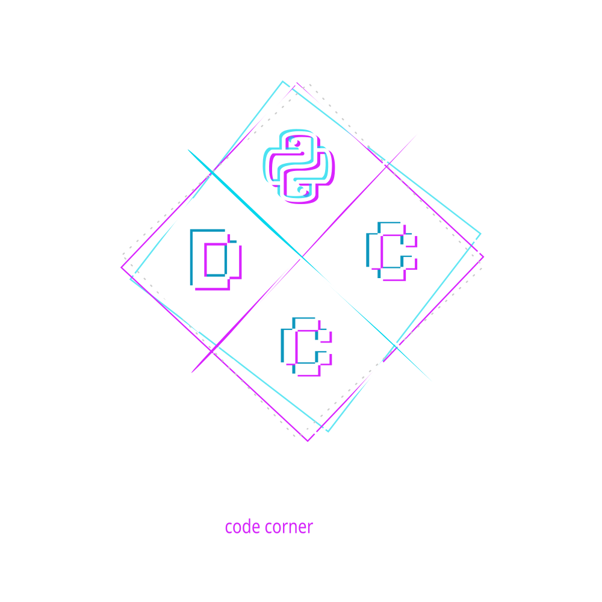
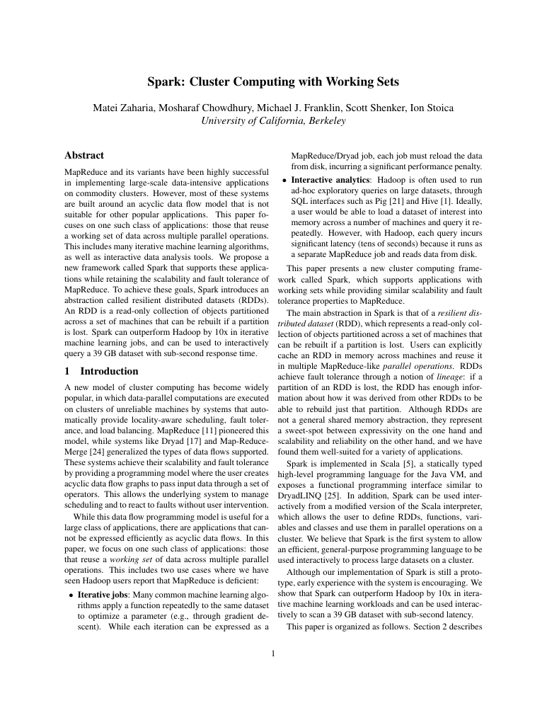
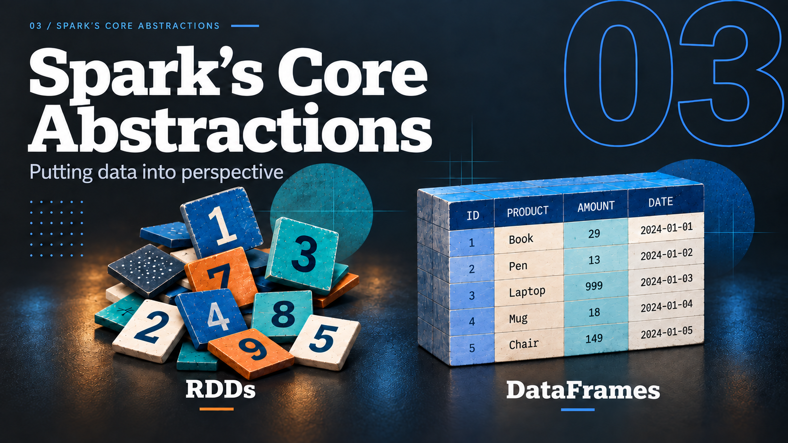

DCC / SPARK TRAINING
A WORKSHOP
MasteringPySpark Big Data Analytics with PySpark
Danny Meijer

Welcome. This is a presentation skeleton with sample layouts, not the migrated course. About Me — Danny Meijer Independent data & software engineer.
20 years of experience in Software engineering, Data Engineering and Cloud.
Large-scale data platforms Previously Principal Software Engineer at Nike.
Core technologies Spark, Databricks, Python, SQL and AWS.
Teaching PySpark Creator of Mastering Big Data Analytics with PySpark.
Creator of Incan A Python-readable, Rust-native programming language.
Curious. Pragmatic. Always learning.
Danny’s Code Corner
Introduce yourself as an independent data and software engineer with 20 years of experience (confirmed by Danny for this slide). Previously Principal Software Engineer at Nike; Nike employment ended March 2026. Briefly connect your data-platform experience and original PySpark course to today’s workshop. No need to enumerate a CV: these are short points to introduce your background. Portrait artwork updated using Danny’s supplied Portland coffee-shop photograph as the image-editing reference. Background facts checked against the May 2026 CV source material; current role and experience total confirmed by Danny in this conversation. Introduce yourself as an independent data and software engineer, with 20 years across software, data and cloud. Nike is a previous role. Connect the course to your teaching experience; briefly introduce Incan as a Python-readable, Rust-native language you created. Artwork follows the selected third visual direction, with mountains removed. The visual typography is part of the full-slide artwork; the biography is also provided as accessible HTML. DCC / SPARK TRAINING
Agenda 01 / SPARK VS. PYTHON
The language you write
How do Python and Sparkwork together? Open the section with the distinction between the language and the distributed engine. Python and Spark are not competing tools: PySpark connects them. Ask how Python code becomes work on a cluster, then advance to Cluster Computing. The central connection is a visual metaphor, not a technical process diagram. 01 / SPARK VS. PYTHON
Cluster Computing Several computers working together. Each computer is a node.
Cluster Computing A Spark driver schedules tasks on executors across three worker nodes and receives results and status; a separate cluster manager allocates resources, and executors access data storage directly. Worker nodes Launch Results and status Your application Submit the program Result For count(): a number Cluster manager Allocates resources Spark driver Schedules tasks Tracks progress Handles results Data storage Files, tables, object storage Read / write Worker node A Executors run tasks Worker node B Executors run tasks Worker node C Executors run tasks Start with the worker nodes: these are separate computers, each contributing CPU and memory. A large computation can be split into tasks that run in parallel. For Spark, distinguish the application’s driver (schedules tasks and handles their results) from the cluster manager (allocates resources across applications). Resource allocation is shown as a relationship, not the full launch protocol. Follow the outgoing work, then results and status returning. For our count example, the distributed computation produces a number that returns to the application. Executors read data directly from storage; input rows do not all travel through the driver. Storage can be remote or local; the drawing uses shared storage and does not imply one fixed partition per node. The driver can run inside or outside the cluster. Transition: “What does a program that uses this cluster look like?” Show the PySpark code and invite the group to explain it. Source: original workshop slide 10; corrected roles: https://spark.apache.org/docs/4.2.0/cluster-overview.html . 01 / SPARK VS. PYTHON
A PySpark application from pyspark.sql import SparkSession
spark = (SparkSession.builder
.appName("MyApp")
.getOrCreate())
df = spark.read.parquet("data/")
print(df.count())Pause here and ask: “Who can explain this piece of code to me?” Let the group talk before explaining. Listen for what SparkSession does, what reading Parquet produces, when work actually starts, and where count and print execute. This is a conversation to gauge familiarity, not a test. The example assumes an available Spark runtime and a readable Parquet dataset at data/. Bridge: “We have seen the cluster. How does this Python program make use of it?” Move directly to the detailed PySpark diagram. Save the full discussion of laziness for the later section. 01 / SPARK VS. PYTHON
How Python Interacts with Spark Classic PySpark · application, driver and cluster
How Python interacts with Spark A PySpark application calls the driver JVM through Py4J. The driver distributes tasks to executor JVMs on cluster worker nodes and receives task results and status. Executors use Python workers when Python execution is required. The driver returns requested results to the application. Your Python application Spark driver Spark cluster Py4J Python calls Requested results Tasks Results and status .py PySpark code spark-submit application.py Driver JVM SparkSession SparkContext Plans the query Schedules tasks Handles task results Java Virtual Machine Worker node A Worker node B Worker node C Executor JVM · tasks Executor JVM · tasks Executor JVM · tasks Python worker Python worker Python worker The complete picture A classic PySpark application, its driver-side processes, and the cluster workers.
1 · Your application Start with a Python application that uses the PySpark API.
2 · Launch spark-submit launches the application; your code creates or obtains a SparkSession.
3 · Python and the JVM Py4J bridges separate Python and JVM processes. SparkSession is an entry point into Spark.
4 · Work on the cluster The driver schedules tasks on executors. Built-in Spark SQL operations run in the Spark engine.
5 · Python on the workers When a task requires Python execution, a Python worker runs that code.
6 · The cost of crossing processes Python workers use CPU and memory; data exchange involves serialization and conversion.
7 · Results back to the driver Executors report results and status. The driver handles task completion and the requested result.
8 · Back in Python For this count(), Python receives a number. print() runs in your Python process.
Previous point Play slowly Pause Next point Replay Step 8 of 8
The final two steps follow the return journey: executors report task results/status; the driver handles completion and requested results; Python receives the result. In the count() example, the distributed query computes the count and returns a scalar to Python. Do not imply every input row returns to the driver, or that all aggregation happens there. The exact result depends on the action (count, collect, write, etc.). Autoplay pauses six seconds per point; manual Next point is preferred during narration.
Diagram controls follow the original numbered narration: application, spark-submit, Python/Py4J/JVM, cluster work, Python workers, and process-crossing costs. Driver-side and cluster groups are logical views, not a claim that the driver is always outside the cluster. Resource management and storage are omitted; result-return paths are shown. One executor and one Python worker per illustrated node are examples, not fixed counts. Each amber JVM box is a separate process.
In this picture, I show a simplified flow of operations between Spark and Python. The actual underlying operations are more complicated, but this should help us understand where some of the limitations of using Python with Spark might lie. We’ll go into Spark’s internal operations in more detail later.
1. Imagine you have a PySpark application in a .py file. You can use spark-submit to launch it. The application creates or obtains a SparkSession, which is our entry point for working with Spark.
2. In classic PySpark, Python uses Py4J to call objects in the Java Virtual Machine. Py4J provides that communication bridge; it does not compile the Python program into Java.
3. On the Spark side, the driver coordinates the application and schedules tasks on the executors. Those executors carry out the distributed work. Built-in Spark SQL operations use Spark’s own implementations.
4. Some tasks also need to execute Python—for example, a Python user-defined function. Executors use Python worker processes for that. These processes need resources, and data must be exchanged between the JVM and Python. This exchange and conversion can add overhead. Arrow can make that exchange more efficient.
That is why the way we express an operation matters. When a built-in Spark function does what we need, it is usually the first thing to consider. When we need Python-specific logic, we can use it, but we need to understand the execution costs. We’ll come back to that in more detail.
For now, that is the simplified picture of how Python and Spark work together. Let’s take a look at how Spark got here.
References: https://www.py4j.org/ ; https://spark.apache.org/docs/4.2.0/cluster-overview.html ; https://spark.apache.org/docs/4.2.0/api/python/user_guide/udfandudtf.html . 01 / SPARK VS. PYTHON
Spark Applications Independent sets of processes, coordinated by a driver.
Spark Applications One application has a driver and its own executor processes on worker nodes; the cluster manager allocates resources, executors run tasks and can cache data, and shuffle data travels between executors. Resources Driver Your application code SparkSession Cluster manager Allocates resources across applications Worker node A Executor Worker node B Executor Task Task Task Task Cache Cache Shuffle data Schedule tasks Schedule tasks Results and status Results and status One application, several processes A driver coordinates its own executors. Worker nodes and the cluster manager are shared infrastructure.
1 · The driver Your application creates a SparkSession. The driver coordinates the work for this application.
2 · Request resources The cluster manager allocates resources so executor processes can be launched.
3 · An application’s own executors Each application gets its own executors. A worker node can host processes from different applications.
4 · Run tasks The driver schedules tasks directly on executors; the cluster manager does not schedule these tasks.
5 · Keep data for reuse Executors can cache data in memory or on disk. Caching is optional—not a copy of every input.
6 · Exchange data Some operations need data from other partitions. Shuffle transfers that data between executors.
7 · Report back Executors return task results and status to the driver. Bulk shuffle data takes a different route.
Previous point Play slowly Pause Next point Replay Step 7 of 7
Follow directly after the Python/Py4J/JVM explanation. “Those processes together form one Spark application.” First identify the driver and its SparkSession; this is a logical application view, with the Python/JVM split explained on the previous slide. Then request resources, acquire application-specific executors, and schedule tasks directly. A worker node is a machine; an executor is a process. Each application has its own executors; the cluster manager is infrastructure shared across applications. The two task boxes illustrate concurrent work, not a fixed task count. Cache is optional, may be in memory or on disk, and belongs to the executor. Introduce shuffle only as data moving between executors; explain stages, exchanges and shuffle mechanics later. Finally contrast task results/status returning to the driver with bulk shuffle data moving between executors. Do not imply every query shuffles or caches. Exact executor launch/status mechanisms differ by cluster manager; resource lines show relationships rather than a literal protocol. Driver placement depends on deploy mode. Source: workshop slide 11 and supplied original/redraw. https://spark.apache.org/docs/4.2.0/cluster-overview.html . 01 / SPARK VS. PYTHON
Python and Spark: recap Python and Spark: recap: key takeaways Your application PySpark calls Spark from Python. Built-in DataFrame operations execute in the Spark engine. Driver Plans the work, schedules tasks and tracks their completion. Worker nodes Host executor processes that run tasks. Python workers are used when a task needs Python execution. Cluster manager Allocates resources to applications. The driver assigns the tasks.
Shuffle data moves between executors; it does not all pass through the driver.
Recall the application and cluster diagrams. Keep machine, process and task distinct. Built-in Spark SQL expressions run in the engine; using the Python API does not make every operation a Python UDF. The diagram in this section showed classic PySpark; Spark Connect has a different client connection.
https://spark.apache.org/docs/4.2.0/cluster-overview.html
https://spark.apache.org/docs/4.2.0/sql-programming-guide.html 02 / INTRODUCING SPARK
A BriefSpark From research ideas to
2003 — 2026 2003 / 04 The foundations
2009 Spark begins
2013 Apache
2026 Spark 4.x
Pause after the Spark Applications explanation. “We’ve seen how Spark works: the driver, executors, tasks, and data moving between them. How did we get here?” Introduce the historical journey: Google’s distributed-systems papers and Hadoop, Spark’s research origins, then its evolution as an Apache project. The mountain is a visual metaphor, not a claim that progress is linear or complete. The summit is the current point in our story, not the end of Spark’s development. Advance to the Hadoop elephant and invite the audience to recall what it was used for. Then begin the timeline with the 2003/2004 papers. Background generated from the user’s supplied visual reference through Product Design; dates and text are editable HTML. Official Spark logo identifies the topic. 02 / INTRODUCING SPARK
Hadoop
Open the history chapter with the elephant alone. Ask: Who recognises this? Who has worked with Hadoop? What problem was it trying to solve? Let the audience answer before starting the timeline. Distinguish the Hadoop ecosystem, HDFS storage and MapReduce processing verbally if needed, without teaching the full mechanics yet. Transition: To understand where Hadoop came from, let’s go back to the Google papers in 2003 and 2004. The detailed MapReduce walkthrough remains at the beginning of chapter 03, where it explains why reuse and RDDs matter. 02 / INTRODUCING SPARK
2003/04 Google’s papers
2006 Hadoop
2009 Spark begins
2010 Open source
2013 Apache
2014 Spark 1.0
2015 DataFrames
2016 Spark 2.0
2020/21 Spark 3.x
2023 Connect
2025 Spark 4.0
2026 Spark 4.2
01 / 12 Distributed storage and computation
Google’s papers Google File System describes distributed storage; MapReduce describes processing across machines. These are two different responsibilities.
Chronological milestones · spacing not to scale
Visual assets: see assets/history/CREDITS.md. Official logos identify the projects, not sponsorship. The Berkeley photo was taken in 2013 and illustrates the location, not the founding event. 2003 / 2004 — Google’s papers.
Begin with the cluster vocabulary they now know. Large datasets need both somewhere to live and a way to divide the work. GFS (2003) and MapReduce (2004) helped establish this approach. MapReduce handles distribution and failures so programmers can focus on map and reduce functions.
Advance once to travel to the next milestone. The rail uses milestone spacing, not a proportional elapsed-time scale.
Sources (checked 2026-09-18):
https://research.google/pubs/the-google-file-system/
https://research.google/pubs/mapreduce-simplified-data-processing-on-large-clusters/
https://svn.apache.org/repos/asf/hadoop/common/tags/release-0.2.0/site/index.html
https://spark.apache.org/history
https://www.usenix.org/conference/hotcloud-10/spark-cluster-computing-working-sets 02 / INTRODUCING SPARK
2003/04 Google’s papers
2006 Hadoop
2009 Spark begins
2010 Open source
2013 Apache
2014 Spark 1.0
2015 DataFrames
2016 Spark 2.0
2020/21 Spark 3.x
2023 Connect
2025 Spark 4.0
2026 Spark 4.2
02 / 12 An open-source implementation
Hadoop Hadoop Hadoop combines distributed storage with MapReduce processing; jobs can be chained through stored output. HADOOP MAPREDUCE Map Shuffle / sort Reduce Output HDFS Distributed storage Hadoop brings distributed storage and MapReduce processing into an open-source project.
Chronological milestones · spacing not to scale
Visual assets: see assets/history/CREDITS.md. Official logos identify the projects, not sponsorship. The Berkeley photo was taken in 2013 and illustrates the location, not the founding event. 2006 — Hadoop.
Hadoop emerged from Nutch in 2006. HDFS and Hadoop MapReduce implement ideas inspired by the Google papers. Explain the appeal: scale across machines and recover from failures. Hadoop is broader than its MapReduce execution engine; Spark can use Hadoop storage and resource-management components.
Advance once to travel to the next milestone. The rail uses milestone spacing, not a proportional elapsed-time scale.
Sources (checked 2026-09-18):
https://research.google/pubs/the-google-file-system/
https://research.google/pubs/mapreduce-simplified-data-processing-on-large-clusters/
https://svn.apache.org/repos/asf/hadoop/common/tags/release-0.2.0/site/index.html
https://spark.apache.org/history
https://www.usenix.org/conference/hotcloud-10/spark-cluster-computing-working-sets 02 / INTRODUCING SPARK
2003/04 Google’s papers
2006 Hadoop
2009 Spark begins
2010 Open source
2013 Apache
2014 Spark 1.0
2015 DataFrames
2016 Spark 2.0
2020/21 Spark 3.x
2023 Connect
2025 Spark 4.0
2026 Spark 4.2
03 / 12 UC Berkeley · AMPLab
Spark begins UC BerkeleyAMPLab
Iterative algorithms.
UC Berkeley · Sather Tower
Reuse working data across computations, instead of repeatedly starting from stored output.
Chronological milestones · spacing not to scale
Visual assets: see assets/history/CREDITS.md. Official logos identify the projects, not sponsorship. The Berkeley photo was taken in 2013 and illustrates the location, not the founding event. 2009 — Spark begins.
Spark began at UC Berkeley’s AMPLab in 2009, with Matei Zaharia and collaborators. Explain the pain before naming the solution: iterative algorithms and interactive analysis repeatedly work over the same data. Chaining separate MapReduce jobs adds repeated storage I/O and job overhead. Spark supports reusable distributed datasets and more general computation flows. Do not describe Spark as disk-free or promise a universal speedup.
Advance once to travel to the next milestone. The rail uses milestone spacing, not a proportional elapsed-time scale.
Sources (checked 2026-09-18):
https://research.google/pubs/the-google-file-system/
https://research.google/pubs/mapreduce-simplified-data-processing-on-large-clusters/
https://svn.apache.org/repos/asf/hadoop/common/tags/release-0.2.0/site/index.html
https://spark.apache.org/history
https://www.usenix.org/conference/hotcloud-10/spark-cluster-computing-working-sets 02 / INTRODUCING SPARK
2003/04 Google’s papers
2006 Hadoop
2009 Spark begins
2010 Open source
2013 Apache
2014 Spark 1.0
2015 DataFrames
2016 Spark 2.0
2020/21 Spark 3.x
2023 Connect
2025 Spark 4.0
2026 Spark 4.2
04 / 12 From research to a shared project
Spark goes open source 
HOTCLOUD ’10 Cluster Computing The ideas are published.
Spark combines distributed execution with data reuse, including keeping working data in memory.
Chronological milestones · spacing not to scale
Visual assets: see assets/history/CREDITS.md. Official logos identify the projects, not sponsorship. The Berkeley photo was taken in 2013 and illustrates the location, not the founding event. 2010 — Spark goes open source.
The 2010 paper explains the working-set motivation. Memory reuse is a capability, not a requirement that every dataset fits in RAM; Spark still reads, writes, shuffles and spills. This connects to the cache boxes just introduced. Transition: the research system becomes an Apache project and develops higher-level APIs.
Advance once to travel to the next milestone. The rail uses milestone spacing, not a proportional elapsed-time scale.
Sources (checked 2026-09-18):
https://research.google/pubs/the-google-file-system/
https://research.google/pubs/mapreduce-simplified-data-processing-on-large-clusters/
https://svn.apache.org/repos/asf/hadoop/common/tags/release-0.2.0/site/index.html
https://spark.apache.org/history
https://www.usenix.org/conference/hotcloud-10/spark-cluster-computing-working-sets 02 / INTRODUCING SPARK
2003/04 Google’s papers
2006 Hadoop
2009 Spark begins
2010 Open source
2013 Apache
2014 Spark 1.0
2015 DataFrames
2016 Spark 2.0
2020/21 Spark 3.x
2023 Connect
2025 Spark 4.0
2026 Spark 4.2
05 / 12 The Apache Software Foundation
Spark joins Apache 2013 Spark enters
An open project, developed by a community.
Spark moves to the Apache Software Foundation and grows beyond the original research team.
Chronological milestones · spacing not to scale
Visual assets: see assets/history/CREDITS.md. Official logos identify the projects, not sponsorship. The Berkeley photo was taken in 2013 and illustrates the location, not the founding event. 2013 — Spark joins Apache.
Keep the Apache Software Foundation and Databricks distinct. Spark is an open-source Apache project, not synonymous with a particular vendor’s platform.
Advance once to travel to the next milestone. The rail uses milestone spacing, not a proportional elapsed-time scale.
Sources (checked 2026-09-18):
https://spark.apache.org/history
https://spark.apache.org/releases/spark-release-1-0-0.html
https://spark.apache.org/releases/spark-release-1-3-0.html
https://spark.apache.org/releases/spark-release-2-0-0.html 02 / INTRODUCING SPARK
2003/04 Google’s papers
2006 Hadoop
2009 Spark begins
2010 Open source
2013 Apache
2014 Spark 1.0
2015 DataFrames
2016 Spark 2.0
2020/21 Spark 3.x
2023 Connect
2025 Spark 4.0
2026 Spark 4.2
07 / 12 A common engine for different workloads
Spark 1.0 Spark 1.0 Spark 1.0 includes libraries for SQL, streaming, machine learning and graphs around the core engine. Spark SQL Streaming MLlib GraphX Spark Core Scheduling · distributed data · execution Spark becomes an Apache top-level project, and version 1.0 is released.
Chronological milestones · spacing not to scale
Visual assets: see assets/history/CREDITS.md. Official logos identify the projects, not sponsorship. The Berkeley photo was taken in 2013 and illustrates the location, not the founding event. 2014 — Spark 1.0.
This is the transition from a research project to an established platform. RDDs are a foundational API; structured-data APIs are developing too. Avoid implying Spark SQL only appeared with Spark 2.0. The library stack illustrates Spark 1.0, including early Spark SQL and DStream-based Spark Streaming. These are not all new in 1.0; Structured Streaming arrives later.
Advance once to travel to the next milestone. The rail uses milestone spacing, not a proportional elapsed-time scale.
Sources (checked 2026-09-18):
https://spark.apache.org/history
https://spark.apache.org/releases/spark-release-1-0-0.html
https://spark.apache.org/releases/spark-release-1-3-0.html
https://spark.apache.org/releases/spark-release-2-0-0.html 02 / INTRODUCING SPARK
2003/04 Google’s papers
2006 Hadoop
2009 Spark begins
2010 Open source
2013 Apache
2014 Spark 1.0
2015 DataFrames
2016 Spark 2.0
2020/21 Spark 3.x
2023 Connect
2025 Spark 4.0
2026 Spark 4.2
08 / 12 Spark 1.3 · 2015
DataFrames and a growing community DataFrames and a growing community DataFrames introduce named columns and schemas while the contributor community grows. DATAFRAMES name city amount … … … … … … A growing community Developers across organizations Columns and schemas A broader project and ecosystem Named columns and schemas give Spark more information to optimize your computation.
Chronological milestones · spacing not to scale
2015 — DataFrames and a growing community.
The DataFrame API arrives in Spark 1.3, building on Spark SQL. This changes how we express a lot of data engineering: describe operations on columns and allow the engine to optimize them. Save schemas, Catalyst and API examples for their dedicated sections. RDDs remain available. Community detail: a preserved Apache site snapshot in 2016 reports more than 1,000 cumulative contributors. Do not state that threshold was crossed in 2015 without a dated primary source. https://svn.apache.org/repos/asf/spark/site/index.html
Advance once to travel to the next milestone. The rail uses milestone spacing, not a proportional elapsed-time scale.
Sources (checked 2026-09-18):
https://spark.apache.org/history
https://spark.apache.org/releases/spark-release-1-0-0.html
https://spark.apache.org/releases/spark-release-1-3-0.html
https://spark.apache.org/releases/spark-release-2-0-0.html 02 / INTRODUCING SPARK
2003/04 Google’s papers
2006 Hadoop
2009 Spark begins
2010 Open source
2013 Apache
2014 Spark 1.0
2015 DataFrames
2016 Spark 2.0
2020/21 Spark 3.x
2023 Connect
2025 Spark 4.0
2026 Spark 4.2
08 / 12 A common entry point
Spark 2.0 Spark 2.0 SparkSession provides a common entry point; structured APIs support batch and streaming. SparkSession DataFrames / SQL Describe structured computations Structured Streaming Same structured approach SparkSession becomes the common entry point; Structured Streaming brings streaming into the structured APIs.
Chronological milestones · spacing not to scale
Visual assets: see assets/history/CREDITS.md. Official logos identify the projects, not sponsorship. The Berkeley photo was taken in 2013 and illustrates the location, not the founding event. 2016 — Spark 2.0.
Point back to SparkSession in our code example. Spark 2.0 unifies the DataFrame/Dataset APIs and introduces Structured Streaming as experimental; it is not the birth of all Spark streaming. Earlier Spark Streaming uses DStreams. Whole-stage code generation also advances SQL execution. We will cover streaming and query planning later. Transition: the next generation also changes execution decisions at runtime and how clients connect. Catalyst and Tungsten predate Spark 2.0; 2.0 builds on them and introduces whole-stage code generation. Do not label 2016 as their birth.
Advance once to travel to the next milestone. The rail uses milestone spacing, not a proportional elapsed-time scale.
Sources (checked 2026-09-18):
https://spark.apache.org/history
https://spark.apache.org/releases/spark-release-1-0-0.html
https://spark.apache.org/releases/spark-release-1-3-0.html
https://spark.apache.org/releases/spark-release-2-0-0.html 02 / INTRODUCING SPARK
2003/04 Google’s papers
2006 Hadoop
2009 Spark begins
2010 Open source
2013 Apache
2014 Spark 1.0
2015 DataFrames
2016 Spark 2.0
2020/21 Spark 3.x
2023 Connect
2025 Spark 4.0
2026 Spark 4.2
09 / 12 2020: AQE arrives · 2021: enabled by default
Spark 3.0 and AQE Spark 3.0 and AQE AQE uses runtime statistics to revise parts of the physical query plan. Initial plan Runtime statistics What actually happened Adapted plan AQE Adaptive Query Execution can revise a query’s physical plan using statistics collected during execution.
Chronological milestones · spacing not to scale
2020 / 2021 — Spark 3.0 and AQE.
Spark 3.0 introduces the modern AQE framework in 2020; 3.2 enables it by default in 2021. Examples to name briefly: coalescing shuffle partitions, adapting joins and handling skew. This does not remove the need to understand partitions and shuffles. Spark 3.2 also introduces the pandas API on Spark; it is not the same as ordinary local pandas.
Advance once to travel to the next milestone. The rail uses milestone spacing, not a proportional elapsed-time scale.
Sources (checked 2026-09-18):
https://spark.apache.org/releases/spark-release-3-0-0.html
https://spark.apache.org/releases/spark-release-3-2-0.html
https://spark.apache.org/releases/spark-release-3-4-0.html
https://spark.apache.org/releases/spark-release-4-0-0.html
https://spark.apache.org/releases/spark-release-4-2-0.html
https://spark.apache.org/history 02 / INTRODUCING SPARK
2003/04 Google’s papers
2006 Hadoop
2009 Spark begins
2010 Open source
2013 Apache
2014 Spark 1.0
2015 DataFrames
2016 Spark 2.0
2020/21 Spark 3.x
2023 Connect
2025 Spark 4.0
2026 Spark 4.2
10 / 12 Spark 3.4 · 2023
Spark Connect Spark Connect Spark Connect separates a remote client from the Spark server, exchanging plans and results. Python client Your application Query plans Results Spark server Driver and execution A remote client can send a query plan to Spark. The classic local Py4J picture is no longer the only connection model.
Chronological milestones · spacing not to scale
2023 — Spark Connect.
Spark 3.4 introduces Spark Connect and its Python client. The client sends unresolved logical plans using a protocol rather than directly accessing driver JVM objects through Py4J. Do not imply classic PySpark disappears. This is the historical introduction; keep the detailed architecture comparison in its own section.
Advance once to travel to the next milestone. The rail uses milestone spacing, not a proportional elapsed-time scale.
Sources (checked 2026-09-18):
https://spark.apache.org/releases/spark-release-3-0-0.html
https://spark.apache.org/releases/spark-release-3-2-0.html
https://spark.apache.org/releases/spark-release-3-4-0.html
https://spark.apache.org/releases/spark-release-4-0-0.html
https://spark.apache.org/releases/spark-release-4-2-0.html
https://spark.apache.org/history 02 / INTRODUCING SPARK
2003/04 Google’s papers
2006 Hadoop
2009 Spark begins
2010 Open source
2013 Apache
2014 Spark 1.0
2015 DataFrames
2016 Spark 2.0
2020/21 Spark 3.x
2023 Connect
2025 Spark 4.0
2026 Spark 4.2
11 / 12 New APIs and new defaults
Spark 4.0 Spark 4.0 Spark 4.0 changes SQL defaults and expands Python and Spark Connect APIs. SQL ANSI mode by default Python Data Source API Connect Lightweight client ANSI SQL mode becomes the default; Python data sources and Spark Connect gain capabilities.
Chronological milestones · spacing not to scale
Visual assets: see assets/history/CREDITS.md. Official logos identify the projects, not sponsorship. The Berkeley photo was taken in 2013 and illustrates the location, not the founding event. 2025 — Spark 4.0.
Use this as a practical upgrade milestone, not a catalogue. Spark 4.0 defaults to ANSI SQL mode, which changes behavior for some invalid operations. Other developments include VARIANT, a Python Data Source API, a lightweight Connect client and richer streaming state APIs. The runtime baseline changes too: Java 17 and Scala 2.13. Version-specific behavior needs checking when migrating old examples.
Advance once to travel to the next milestone. The rail uses milestone spacing, not a proportional elapsed-time scale.
Sources (checked 2026-09-18):
https://spark.apache.org/releases/spark-release-3-0-0.html
https://spark.apache.org/releases/spark-release-3-2-0.html
https://spark.apache.org/releases/spark-release-3-4-0.html
https://spark.apache.org/releases/spark-release-4-0-0.html
https://spark.apache.org/releases/spark-release-4-2-0.html
https://spark.apache.org/history 02 / INTRODUCING SPARK
2003/04 Google’s papers
2006 Hadoop
2009 Spark begins
2010 Open source
2013 Apache
2014 Spark 1.0
2015 DataFrames
2016 Spark 2.0
2020/21 Spark 3.x
2023 Connect
2025 Spark 4.0
2026 Spark 4.2
12 / 12 The current generation · 2026
Spark 4.2 Spark 4.2 Spark 4.2 develops Python, SQL and Connect while retaining the core distributed execution model. Python + Arrow New default paths SQL + data Geospatial and CDC Connect Continued development Still: distributed data, operations, and an execution engine. Spark 4.2 extends SQL and data-source support, and enables Arrow-based Python execution paths by default.
Chronological milestones · spacing not to scale
Visual assets: see assets/history/CREDITS.md. Official logos identify the projects, not sponsorship. The Berkeley photo was taken in 2013 and illustrates the location, not the founding event. 2026 — Spark 4.2.
Verified on 18 September 2026: the Apache project lists Spark 4.2.0 as released on 14 July 2026. Release highlights include Arrow-optimized Python UDFs and Arrow-based PySpark IPC enabled by default, geospatial types and CDC APIs. These are context, not extra topics to teach in depth today. Arrow reduces some transfer overhead; it does not erase process boundaries or make every Python operation free. End the history with the enduring ideas: distributed data, operations and execution. That leads into core abstractions, with Connect and execution details covered separately.
Advance once to travel to the next milestone. The rail uses milestone spacing, not a proportional elapsed-time scale.
Sources (checked 2026-09-18):
https://spark.apache.org/releases/spark-release-3-0-0.html
https://spark.apache.org/releases/spark-release-3-2-0.html
https://spark.apache.org/releases/spark-release-3-4-0.html
https://spark.apache.org/releases/spark-release-4-0-0.html
https://spark.apache.org/releases/spark-release-4-2-0.html
https://spark.apache.org/history 02 / INTRODUCING SPARK
Spark’s Main Components Different capabilities, shared execution engine.
Spark’s main components PySpark provides Python access to Spark SQL, Structured Streaming and MLlib. Structured Streaming builds on Spark SQL. GraphX uses Scala. All share Spark’s distributed execution engine. Python API · PySpark Write your application in Python Spark SQL DataFrames · SQL · structured data Structured Streaming Streaming tables, built on Spark SQL MLlib Machine learning at scale SCALA API GraphX Graph processing and analytics Spark Core Distributed execution engine Task scheduling · memory management Fault tolerance · distributed data That is how Spark developed. Here is what we mean by Spark today. Start at the foundation: Spark Core handles distributed execution. Above it, Spark SQL gives us structured data and DataFrames. Structured Streaming is built on Spark SQL: show its position inside that box. MLlib and GraphX complete the overview; they are context, not additional course topics. Python reaches SQL, Structured Streaming and MLlib through PySpark. The Python band intentionally stops before GraphX, whose API is Scala. This is a capability map, not a call sequence or a complete API inventory; PySpark also exposes the RDD API. Legacy DStream Spark Streaming is omitted in favour of Structured Streaming. Transition: These capabilities share the same engine. Now let’s look at how we represent the data that engine works on.
Sources: https://spark.apache.org/streaming/ ; https://spark.apache.org/docs/latest/graphx-programming-guide.html ; https://spark.apache.org/docs/latest/ml-guide.html 02 / INTRODUCING SPARK
Introducing Spark: recap Introducing Spark: recap: key takeaways Data reuse Spark grew from the need to reuse working data across iterative and interactive computations. Structured queries DataFrames add schemas and expressions that Spark SQL can analyse and optimise. Shared engine SQL, Structured Streaming and machine learning use the same distributed foundation. Newer capabilities AQE adapts plans using runtime information. Spark Connect lets a remote client submit query plans.
DataFrames and Spark SQL are the main interfaces we will use.
Close the history on the reasons behind the evolution, rather than asking the audience to memorise release dates. Spark adds reusable working data, structured query optimisation and broader ways to use the engine. Persistence is optional; this is not a claim that every computation stays in memory.
https://spark.apache.org/history
https://www.usenix.org/conference/hotcloud-10/spark-cluster-computing-working-sets
https://spark.apache.org/docs/4.2.0/sql-programming-guide.html
https://spark.apache.org/docs/4.2.0/sql-performance-tuning.html
https://spark.apache.org/docs/4.2.0/spark-connect-overview.html 
03 / Spark’s Core Abstractions
Spark’s Core Abstractions Putting data into perspective
RDDs · DataFrames
This section focuses on RDDs and DataFrames. The history chapter established where Hadoop and Spark came from. Now follow one MapReduce calculation to see why reuse matters, explain recovery with RDDs, then show what schema-aware DataFrame expressions let Spark optimise. Typed Dataset details are in the reference deck if questions arise. 03 / SPARK’S CORE ABSTRACTIONS
How MapReduce works What is the total per category?
Input Map Shuffle Reduce Write Read again mapreduce job Four records are mapped in two tasks, shuffled by category, reduced to totals, written to HDFS and read by a later job. Input records Parallel map tasks Group by key → reduce Input split A Input split B books 25 games 40 books 15 music 10 Map task A Map task B (books, 25) (games, 40) (books, 15) (music, 10) books 40 games 40 music 10 25 + 15 HDFS · job output books 40 games 40 music 10 Next calculation Read the stored output Process it again Start with the question What is the total per category? The input is split so tasks can work in parallel.
Map · emit a common key Each map task emits category–amount pairs from its own input split.
Shuffle · matching keys must meet The books records came from different tasks. Bring their amounts together before adding them.
Reduce · combine each group Add the amounts for each category: books 40, games 40, music 10.
Finish this job Write the output to HDFS so another job can use it.
Now do another calculation That next job reads the intermediate output back. Repeated jobs repeat this storage round trip.
Previous point Next point Replay
Source: original course 2.1 slides 7–9 and https://hadoop.apache.org/docs/r3.2.2/hadoop-mapreduce-client/hadoop-mapreduce-client-core/MapReduceTutorial.html . Start by asking attendees to predict where the two books records must meet. Advance one step at a time. Input split A/B are teaching examples; an HDFS block is not automatically one input split. Map tasks process independently; shuffle transfers and sorts intermediate pairs so equal keys reach the same reducer. Groups shown do not imply one reducer per key. Omit combiners for clarity. Map output is buffered/spilled locally, not necessarily written to HDFS. The HDFS write shown is job output between jobs. MapReduce also provides task retries and fault tolerance; Spark did not invent those. End with why this is useful AND costly for iterative or interactive reuse. No claim that all disk use disappears in Spark. 03 / SPARK’S CORE ABSTRACTIONS
How much faster? A historical example: logistic regression in Hadoop and Spark.
Running time · seconds · lower is better ≈122× faster in this example
110 ÷ 0.9 Repeated work is where reusing data can make a dramatic difference.
Source: Apache Spark · MLlib performance example
Use after the in-memory explanation. Ask: How big a difference can this make? Apache Spark’s own MLlib page shows Hadoop 110 seconds and Spark 0.9 seconds for logistic regression. The ratio calculated from those labels is approximately 122.2. This recovers the figures from the original course, using a primary source instead of the rejected July 2013 PySpark talk. Explain that iterative algorithms reuse a working set, so the previous slide explains an important reason such gains are possible. Do not claim this graphic isolates persistence, measures only warm iterations, includes or excludes initial loading, or benchmarks the Python API specifically: the page and image do not specify those details, versions, hardware or dataset size. No benchmark date is asserted. This is a historical illustration, not a current benchmark or a promise for every workload. If asked for a production estimate, explain that reuse, memory capacity, I/O, shuffle and workload all matter. End with: But, how does Spark do this? Pause, then advance to the RDD-only slide. Do not expand the acronym yet. Sources: https://spark.apache.org/mllib/ and https://spark.apache.org/images/logistic-regression.png . Source image retained in assets/history/spark-logistic-regression-source.png. RDD Let the acronym sit on screen. Ask: Who has come across RDDs? Can anyone tell me what RDD stands for? How might it relate to the performance difference we just saw? Pause and invite answers before advancing. The next slide expands the acronym and explains partitioned data, persistence and recovery. Keep the distinction clear: RDDs support this model, but reuse across calculations requires persistence; merely creating an RDD does not cache it. 03 / SPARK’S CORE ABSTRACTIONS
Resilient Distributed Dataset Reuse distributed data, and retain how it was derived.
Source Partitions Persist Reuse Loss Recover Why? rdd walk The same sales are parsed into two RDD partitions, persisted for sum and count, and P0 is recovered from its source if lost. Same sales · source data books 25 games 40 books 15 music 10 parse parse Partition P0 Partition P1 books 25 games 40 books 15 music 10 Persisted after computation Total sales 90 Number of sales 4 P0 unavailable Recompute from source Replay the parse for P0 A different way to reuse the same sales The source stays available. Spark describes partitioned collections and their transformations.
Distributed · one collection, multiple partitions Parse the records into RDD partitions. This is a plan until an action requests computation.
Reuse · keep a useful intermediate RDD After it is computed, persist these partitions for later calculations. Here they fit in memory.
Another calculation, the same persisted data Sum and count can reuse the parsed records rather than read and parse the source again.
Resilient · a partition becomes unavailable The stored copy of P0 is lost. P1 remains available; the source and lineage remain.
Lineage · rebuild the missing partition Read source P0 and replay its parse. This narrow dependency lets us rebuild only P0.
Pause · why does this matter? Partitions explain parallel work. Dependencies explain required work. Recovery can explain repeated work.
Previous point Next point Replay
Start by reconnecting to the benchmark: repeated calculations on the same data can reuse a persisted intermediate result. Our tiny sales sum/count example illustrates reuse, not the logistic-regression benchmark. An RDD is an immutable, partitioned collection. Parsing creates a dependency on source data; transformations are lazy and actions request work. persist/cache alone does not materialise anything. At Persist, explicitly say an action has now computed the partitions; the visual uses an in-memory storage choice and assumes the data fits. Memory/disk storage levels vary; Spark still uses disk for shuffle, spill and storage. Reuse does not guarantee cache availability. Loss represents an unavailable cached partition, not permanent loss of the source. P0 parse is a narrow deterministic dependency; joins/shuffles can require more extensive recovery. Source is assumed available. Sum/count shown are application results combining partition contributions, not necessarily one task each. Stop at Why and let attendees answer before proceeding to DataFrames. References: https://www.usenix.org/system/files/conference/nsdi12/nsdi12-final138.pdf ; https://spark.apache.org/docs/latest/rdd-programming-guide.html 03 / SPARK’S CORE ABSTRACTIONS
Give Spark more information A schema and expressions make the request visible to the optimiser.
RDD Schema Request Prune Execute Why? dataframe walk The sales become named columns; an amount-only filter permits column pruning with a supporting source and executes across partitions. Same sales · Parquet source books 25 games 40 books 15 music 10 Rows + schema category amount books 25 games 40 books 15 music 10 select("amount") filter(col("amount") > 20) Requested result 25 40 Tasks still process partitions RDDs gave us distributed collections But an arbitrary Python function does not expose its column-level meaning to Spark SQL.
Give the values names and types category is a string; amount is a number. The rows still belong to distributed partitions.
Use built-in expressions Request amount values above 20. Spark can analyse this request and plan the computation.
Why this helps · read only required columns With a suitable columnar source, the unused category column can be pruned from the read.
Execute the plan across partitions For this example, the requested values are 25 and 40. Supported filters may also be pushed toward the source.
Why learn the lower layers? A DataFrame query becomes an execution plan over partitions. Shuffles, persistence and recovery still matter.
Previous point Next point Replay
Keep the scene fixed while changing what Spark knows about the request. A DataFrame is not a wrapper around a Python RDD: Spark SQL builds logical and physical plans and uses internal row/columnar representations. The lower-level concepts of partitions, dependencies and tasks remain useful. Compare rdd.filter(lambda sale: sale[1] > 20) with a built-in col("amount") > 20 expression verbally. Python UDFs may again hide logic. This demonstration changes the data source representation to Parquet explicitly so column pruning is meaningful; CSV cannot generally avoid reading physical bytes for unused columns in the same way. At Request no execution has happened; show results only at Execute. Filter pushdown depends on source capabilities and statistics; not every rejected row can be skipped at read. A residual filter may remain. Original category values remain as faint explanatory context after pruning. Explain the relationship explicitly: the RDD API lets you specify functions on distributed elements; the DataFrame API lets you specify schema-aware expressions that Catalyst can optimise. Spark SQL physical execution uses internal RDDs of rows or columnar batches, not a Python RDD wrapped in column names. A groupBy may introduce a shuffle; a skewed partition can delay the job; repeated actions can recompute work unless retained appropriately. These are why the RDD mental model still matters when writing DataFrame code. Calling df.rdd in classic PySpark exposes Python Row objects and subsequent arbitrary Python transformations are outside Catalyst relational optimisation. It is not necessary to call df.rdd for DataFrames to execute. Spark Connect does not expose this RDD API. Next, show that a transformation describes a new DataFrame and that assigning it to the same Python name does not mutate the original. The API overview then connects these interfaces to distributed execution. Dataset details are reference material only. Source: https://spark.apache.org/docs/latest/sql-programming-guide.html ; https://spark.apache.org/docs/latest/sql-data-sources-parquet.html 03 / SPARK’S CORE ABSTRACTIONS
immutable /ɪˈmjuːtəbl/ adjective
that cannot be changed;
Oxford Learner’s Dictionaries
Adapted from the dictionary opening in the original corpus: Section 2, 2.4 Spark Dataframes, slide 8. Danny requested the adjective immutable here; the original slide used the noun immutability. Pause on the meaning of the word before explaining why this property matters in Spark. The following slide introduces sharing, reuse and recovery; the next demonstrates a transformation and Python reassignment. Keep the technical explanation on those slides.
Definition and pronunciation: Oxford Advanced Learner’s Dictionary, immutable (adjective), checked 21 September 2026. https://www.oxfordlearnersdictionaries.com/definition/english/immutable 03 / SPARK’S CORE ABSTRACTIONS
Why Spark uses immutability A transformation does not modify its input.
Share an input Independent computations can use the same input without one transformation changing it for the others.
Reuse results When you persist a result, Spark can reuse its partitions from memory or disk.
Recover lost work With lineage and available inputs, Spark can recompute missing partitions. How can Spark transform data
Original corpus: Section 2, 2.4 Spark Dataframes, slide 9 and its speaker notes. The teaching purpose is to explain why Spark's immutable transformation model is useful before demonstrating it in Python. We have just seen how Spark describes work over distributed partitions. Those partitions may be used by different computations: an operation produces a derived dataset instead of editing the shared input in place. This removes the need to coordinate such in-place edits to the input. It does not mean Spark has no coordination, mutable internal buffers, or external side effects.
Reuse: explicitly request persistence when computed partitions should be retained. The storage level determines memory and/or disk use; eviction and failure can still require recomputation. Reusing a DataFrame variable by itself does not guarantee reuse of computed rows. Immutability supports this model but does not automatically cache anything.
Recovery: connect to the earlier RDD explanation. Lineage describes how a partition was derived. Spark can recompute a missing partition when its required inputs are accessible. Reproducing the same values also requires stable inputs and deterministic computation; immutability is not a snapshot guarantee for external files or a promise that all user functions are deterministic. Avoid the original notes' claim that immutability alone makes data reproducible at any time, and avoid implying that every transformation copies all rows.
Finish with the audience question: "How can Spark transform data if the input cannot change?" Pause here. The next slide demonstrates the answer: select returns a new DataFrame, and assigning that result to df changes the Python binding. Keep that reveal on the following slide rather than repeating its code here.
Sources: https://spark.apache.org/docs/latest/rdd-programming-guide.html#rdd-operations ; https://spark.apache.org/docs/latest/rdd-programming-guide.html#rdd-persistence ; https://spark.apache.org/docs/latest/api/python/reference/pyspark.sql/api/pyspark.sql.DataFrame.select.html 03 / SPARK’S CORE ABSTRACTIONS
df = df.select(…) df = df.select ("amount" ) Before the statement Evaluate the right-hand side Assign the result A new DataFrame, followed by a new binding for df Initially the Python name df refers to DataFrame A, with category and amount columns. Evaluating df.select("amount") creates DataFrame B, describing the amount column from A. Assignment then moves the df binding from A to B. Both DataFrame descriptions stay in place; A is unchanged. These are descriptions of data, not copies of its rows. select DataFrame A Columns category amount Original DataFrame DataFrame B Columns amount Select amount from A Python name df df refers to DataFrame A. Its columns are category and amount.
select returns a new DataFrame. B describes the amount column from A. The name df still refers to A.
The name df now refers to B. select created B from A; the assignment leaves A unchanged. No data copy is implied.
Previous point Next point Replay 3 / 3
Original corpus: Section 2, 2.4 Spark Dataframes, slide 10. Rebuilt as a three-step assignment walkthrough. First establish that df refers to A. Then highlight and evaluate the right-hand expression: select returns B, while df still refers to A. Finally highlight the left-hand name and move the single df marker to B. Only one current binding is ever shown. A and B stay fixed so the audience can see that A's columns never change. The boxes depict DataFrame descriptions and schemas, not materialised rows or a complete physical execution plan. A and B are teaching labels, not Spark IDs. Do not use df.rdd.id() to establish DataFrame identity; it identifies an RDD and is unavailable in Spark Connect. The snippet keeps no separate Python name for A after assignment; B retains a plan derived from its input. Keeping A in this illustration explains the derivation, not a guarantee about object lifetime. Ask: have we actually processed the rows yet? Carry that question through the API overview and recap into Lazy Pandas. Manual Next/Previous/Replay controls let the instructor pause between evaluation and assignment. Static, print and reduced-motion views show the final binding and the complete explanation. Reference: https://spark.apache.org/docs/latest/api/python/reference/pyspark.sql/api/pyspark.sql.DataFrame.select.html 03 / SPARK’S CORE ABSTRACTIONS
How the APIs fit together Different ways to describe work. The same distributed foundations.
RDD API Elements + your functions
↓
You specify the transformations
↓
Spark SQL / Catalyst Logical plan → optimised physical plan
↓
Distributed execution · RDDs underneath Partitions → tasks on executors · dependencies · recovery
groupBy / join May move data between partitions: a shuffle.
One slow partition Uneven work can hold up the whole stage.
Use the result again Persistence can avoid repeating earlier work.
Recap the two interfaces in this course: RDDs and DataFrames. Start at DataFrame: we describe what we want using schema-aware expressions. Catalyst analyses and optimises that query and produces a physical plan. Spark SQL uses internal row/columnar representations and RDD-based execution beneath those operators. Compare the left RDD API path: users supply transformations directly; arbitrary functions do not give Catalyst equivalent relational information. Do not call a DataFrame merely an RDD with column names. Both paths rely on partitions and dependencies and run tasks on executors. That is why learning the lower layer helps diagnose a shuffle, skew, repeated computation and recovery. A DataFrame can be created from an RDD plus a schema, but need not originate from a Python RDD. No manual conversion to RDD is needed. In classic PySpark, df.rdd exposes Python Rows; moving to arbitrary Python RDD transformations leaves Spark SQL relational optimisation for those transformations. Spark Connect does not support the RDD API. If asked about the reference link: Spark 2.0 unified DataFrame/Dataset in Scala/Java; Scala DataFrame is Dataset[Row], Java uses Dataset<Row>. Python has no typed Dataset[T] API. Source: https://spark.apache.org/releases/spark-release-2-0-0.html ; https://spark.apache.org/docs/latest/sql-programming-guide.html ; https://github.com/apache/spark/blob/v4.0.0/sql/core/src/main/scala/org/apache/spark/sql/execution/SparkPlan.scala . End by pointing to Catalyst: “This is Catalyst, Spark’s query optimiser. I’ll come back to that.” Then say “But first…” and advance to the Lazy Pandas cover. Leave the execution question open for the audience. 03 / SPARK’S CORE ABSTRACTIONS
Core abstractions: recap Core abstractions: recap: key takeaways RDDs Immutable, partitioned collections. Lineage records how their partitions were derived. DataFrames Transformations describe new DataFrames. Named columns and expressions help Spark SQL optimise the work. Persistence Computed partitions can be kept for reuse. Defining an RDD or DataFrame does not cache it. Recovery Lost RDD partitions can be recomputed from their dependencies, while the required input remains available.
A DataFrame is still distributed data: its rows are processed in partitions.
Return to the same sales and the recovered P0. Immutability applies to transformations: select creates a new DataFrame description, and reassignment changes a Python binding. It does not eagerly duplicate rows. Reuse avoids work only while the persisted data is available. Recovery depends on available input and recomputable lineage; it is not a backup of arbitrary external changes. Typed Datasets remain a Scala/Java reference topic.
https://spark.apache.org/docs/4.2.0/rdd-programming-guide.html
https://spark.apache.org/docs/4.2.0/sql-programming-guide.html
04 / LAZY PANDAS
LazyPandas Pandas? … Lazy? …
Continue the handoff from the previous slide: “But first… let’s talk about Lazy Pandas.” Let the image land, then ask: “Any idea how this relates to the story you just heard about DataFrames?” Pause and take answers before explaining. Listen for whether participants distinguish describing transformations from executing the work. If needed, prompt: “When we wrote that filter and select, had Spark already processed the data?” Keep Catalyst as an open thread to return to; do not explain the optimiser here. The panda is a visual pun, not a claim that the pandas library evaluates lazily. Transition into transformations and actions after the audience has responded. 04 / LAZY PANDAS
Pandas vs. Spark DataFrames The operations look familiar. When they run is different.
pandas PySpark Select df[["category", "amount"]]df.select("category", "amount")Filter df[df["amount"] > 20]df.filter(col("amount") > 20)Sort df.sort_values("amount")df.orderBy("amount")Display rows print(df.head(5))df.show(5)
pandas These operations compute as called.
Spark Transformations build a plan.
Based on original workshop slide 23. Start from familiarity, not a comprehensive API cheat sheet. Ask which operations people recognise. Assume df is an existing DataFrame, and col is imported from pyspark.sql.functions. These are separate snippets, not one program. Standard in-memory pandas is generally eager for these operations; pandas copy-on-write is a different concept, not Spark-style lazy query execution. We are not discussing pandas API on Spark here. No obsolete DataFrame.append; no invalid pandas header=True. Transition: let us watch what happens as we write a few Spark transformations. Source: https://spark.apache.org/docs/3.5.8/api/python/getting_started/quickstart_df.html 04 / LAZY PANDAS
lazy /ˈleɪzi/ adjective
unwilling to work or be active;
Oxford Learner’s Dictionaries
Read the ordinary meaning, then pause. Suggested line: “In Spark, this is a compliment.” Continue to the filter, select and show example: transformations describe the work, and the action requests a result. The following slide explains the distinction using an existing DataFrame, including the qualification that analysis and input discovery may do work earlier.
Definition and pronunciation: Oxford Advanced Learner’s Dictionary, lazy (adjective), first sense. https://www.oxfordlearnersdictionaries.com/definition/english/lazy 04 / LAZY PANDAS
Spark is Lazy Describe the work first. Request the result afterwards.
Existing DataFrame Filter Select Action filtered = sales.filter(col("amount") > 20)
amounts = filtered.select("amount")
amounts.show()Same sales: books 25 · games 40
sales ↓ Filter · amount > 20 ↓ Select · amount show() requests rows →
amount 25 40
Plan described · result not computed Execute the required plan
The data we already know Assume sales already exists. We are following the query we build from it.
filter() returns a new DataFrame The filter is added to the plan. It has not scanned the rows to produce filtered.
select() extends that plan We ask for one column. Still no result rows have been requested.
show() is the action Spark executes the required work and displays the requested rows. No ordering is guaranteed here.
Previous point Next point Replay
Based on original slides 24–27. Follow the preceding dictionary entry with this concrete walkthrough. Read the code line by line using Next point. Before revealing the action ask: Have we computed the filtered rows yet? After select ask: What do we need to make this run? The diagram is the conceptual request, not an exact physical plan or a promise of one job/stage. show may issue more than one job and only requests a limited number of rows; exact task count is not taught here. sales is an existing DataFrame containing the same four records, with col imported. Reads/schema inference/metadata discovery and analysis can do work before an action; we intentionally start from an existing DataFrame. Errors can occur during analysis or execution, not universally at action time. Output order is illustrative, not guaranteed without orderBy. Sources: https://spark.apache.org/docs/3.5.8/api/python/getting_started/quickstart_df.html ; https://spark.apache.org/docs/latest/spark-connect-gotchas.html 04 / LAZY PANDAS
Transformations and Actions Which of these asks Spark to produce a result?
Your prediction Transformations Actions sales.filter(col("amount") > 20)
sales.select("amount")
sales.groupBy("category").count()Transformations Return a new DataFrame describing work.
sales.show()
sales.count()
sales.write.parquet("output/")Actions Request rows, a scalar, or written output.
Ask the room before revealing the labels Look at both count() calls. Do they return the same kind of thing?
GroupedData.count() builds an aggregate It returns a DataFrame. The aggregate is still a plan until a result is requested.
DataFrame.count() requests a number show(), count() and a batch write trigger the work their result requires.
Previous point Next point Replay
Based on original workshop slide 28. Give the audience time to classify the examples. Explain that transformations create new DataFrames; they do not mutate existing rows in place. DataFrame.count returns an integer, but groupBy(...).count returns a DataFrame. The receiver matters. An action computes its own dependency path, not every unrelated branch in the program. Batch write executes even though it does not bring all result rows to the driver. Repeating actions may repeat computation unless suitable persistence/reuse applies; lazy does not mean automatically cached. Example output path is illustrative; not actually written in this presentation. Avoid collect as the default example for large data. Source: https://spark.apache.org/docs/latest/api/python/reference/pyspark.sql/dataframe.html 04 / LAZY PANDAS
What does an action ask for? Same four sales: books 25 · games 40 · books 15 · music 10
Define books Display rows Count rows Write files from pyspark.sql import functions as F
books = sales.filter(
F.col("category") == "books")books.show(5)number_of_books = books.count()books.write.parquet("output/books")A DataFrame books
Keep rows wherecategory == "books"
The filtered rows have not been computed.
Displayed rows The two books sales displayed by show category amount books 25 books 15
Up to 5 rows. Order shown is illustrative.
Python return: None
A value in Python number_of_books
2
An integer: the number of books sales.
Files in storage output/books/
Parquet data files The two books rows are saved here.
The output can contain multiple files.
Python return: None
Return values and effects show(5) Returns None. count() Returns the integer 2 . write Returns None.
What have we created? A new DataFrame describing the books sales. Assigning it to a variable has not materialised the rows.
show() asks for a preview. Spark executes the work needed to display up to five rows.
count() asks for a number. Spark counts the matching rows. Python receives the integer 2.
A batch write is also an action. Spark executes the work needed to save the result in storage.
Previous point Next point Replay
Continue from the classification exercise. Reuse the same four-row sales DataFrame from Spark is Lazy: books25, games40, books15 and music10. It is an existing DataFrame backed by our Parquet example, with category and amount columns, and has not been cached. F is explicitly imported. Do not switch to a new createDataFrame syntax or introduce the later five-row sales example yet.
Define books: ask what the variable contains. The transformation returns a new DataFrame representing a query, without materialising its result rows. The sales DataFrame is unchanged. Query analysis or source metadata work can already occur; this is not a claim that the driver has done absolutely nothing.
Display: reveal show(5). Spark displays up to five matching rows. There are two in this illustrative input. The table order is not guaranteed; no orderBy is present. show returns None, not a Python list of those rows, and it need not compute every partition for a limited preview. It can issue more than one job.
Count: reveal the assignment and the Python integer 2. This is DataFrame.count(), the action, not GroupedData.count(). The output is a number of rows, not the amount total 40.
Write: reveal the batch write. The output path denotes a Parquet dataset location and can contain multiple part files. We are not illustrating a single file per row or an exact number of tasks/files. On successful completion, write.parquet returns None to Python; creating files is its side effect. The full result is written to storage rather than collected into the Python variable. The default write mode errors if the destination already exists; use a fresh output path for an actual demonstration. This deck does not execute the write. All actions remain subject to their own optimised plan.
Transition: We have requested three results from the same books DataFrame. Does that mean Spark computed it once and kept it?
https://spark.apache.org/docs/4.2.0/api/python/reference/pyspark.sql/api/pyspark.sql.DataFrame.filter.html
https://spark.apache.org/docs/4.2.0/api/python/reference/pyspark.sql/api/pyspark.sql.DataFrame.show.html
https://spark.apache.org/docs/4.2.0/api/python/reference/pyspark.sql/api/pyspark.sql.DataFrame.count.html
https://spark.apache.org/docs/4.2.0/api/python/reference/pyspark.sql/api/pyspark.sql.DataFrameWriter.parquet.html 04 / LAZY PANDAS
What happens when we ask again? The same books DataFrame, with no persistence requested.
Show Then count Then write Reusing work Action Work that can be repeated Python return Side effect
books.show(5)Read sales → Filter books
None
Displays rows
number_of_books = books.count()Read sales → Filter books
2
— No displayed rows or written files
books.write.parquet("output/books")Read sales → Filter books
None
Writes Parquet files
For reuse, before the actions books.cache()
Store partitions as they are computed.books.unpersist().
Displaying a preview does not cache the DataFrame. The books variable still describes the query.
Counting can require the read and filter again. The previous preview did not request a reusable copy of all the books rows.
The write is another request for work. The plan can differ for each action. Reusing the variable does not guarantee reuse of computed rows.
Persistence is a separate choice. As we saw earlier, cached partitions can support later actions. Use it when the reuse is worth the storage.
Previous point Next point Replay
Ask: We already displayed the books. Will count reuse that output? There has been no cache or persist request in this example. A Python reference to a DataFrame retains the query description, not an automatic materialised copy of the result. Reveal each successive request at the presenter's pace. Read and filter blocks indicate possible repeated upstream work, not exact physical plans, measured I/O or one whole scan per action. show can stop after enough rows, count can prune columns or benefit from source-specific optimisations, and the engine or storage layers may reuse some work. Say can repeat, not always rereads every byte. An action only requests its dependency path, not every unrelated transformation in the program. One action is not a guarantee of one job.
Python return values are separate from visible side effects. On successful completion, show returns None and displays rows; write.parquet returns None and writes files. DataFrame.count returns the integer 2 in this example. The side-effect column refers to displayed rows or written output, not a claim that executing count has no internal effects on Spark.
The final point is a callback to the earlier persistence material, not an instruction to cache every DataFrame. If repeated reuse justifies the cost, call books.cache() or a suitable persist() before the actions. That requests persistence; the cache is populated as partitions are computed. A limited show need not populate all partitions. Later actions can reuse retained partitions and compute any that are still missing. Cache blocks can be evicted or lost, causing recomputation, and storage/serialization costs affect the tradeoff. unpersist when done. The write example is illustrative and is not executed; use a fresh destination in a live demonstration.
Return to Why wait? after this practical consequence. Lazy evaluation lets Spark optimise the requested work. Section 05 follows that request into the actual planning and execution mechanics.
https://spark.apache.org/docs/4.2.0/sql-performance-tuning.html#caching-data
https://spark.apache.org/docs/4.2.0/api/python/reference/pyspark.sql/api/pyspark.sql.DataFrame.cache.html
https://spark.apache.org/docs/4.2.0/rdd-programming-guide.html#rdd-persistence
https://spark.apache.org/docs/4.2.0/api/python/_modules/pyspark/sql/dataframe.html#DataFrame.show
https://spark.apache.org/docs/4.2.0/api/python/_modules/pyspark/sql/readwriter.html#DataFrameWriter.parquet 04 / LAZY PANDAS
Why wait? Spark can see the whole request before processing the rows.
amounts = sales.filter(col("amount") > 20).select("amount")
amounts.show()YOU DESCRIBE Filter + select Only amounts above 20.
→ SPARK CAN PLAN Less work Prune unused columns.
→ YOU REQUEST A result Run the work needed
This is where Catalyst comes back into the story.
Based on original slides 26–28. Close the open thread from the overview before the panda cover. Lazy evaluation provides the opportunity to inspect the whole relational request; Catalyst supplies the analysis and optimisation. Laziness alone does not guarantee a speedup or automatically memoise every result. Column pruning benefits depend on the source; the earlier Parquet example is a suitable illustration. Combining operators does not remove every shuffle, and actions need not execute all earlier transformations literally or separately. Explain the practical payoff without drawing the detailed Catalyst architecture yet; that is section 05. If asked about repeated actions: without persistence they can repeat work. If asked about failures: some are caught during analysis, others during execution. Do not promise delayed errors universally. Transition: how does Spark turn this request into work on the cluster? Source: https://spark.apache.org/docs/latest/sql-programming-guide.html 04 / LAZY PANDAS
Lazy evaluation: recap Lazy evaluation: recap: key takeaways Transformations Return a new DataFrame describing work, such as filter() or select(). Actions Request a result: show() displays rows, count() returns a number, and a batch write saves output. The two counts sales.groupBy("category").count() builds an aggregate DataFrame.sales.count() requests a number.Required work An action computes its own dependencies. Unrelated branches are not all executed.
Lazy evaluation gives Spark room to optimise. It does not mean the result is cached.
Original corpus: Section 2, 2.5 Spark Data Operations, slides 6–7 and 10. The current chapter already has the explicit Transformations and Actions lesson and its count-versus-grouped-count comparison. Avoid the original wording that actions execute all transformations collected so far: only the required dependency path is computed. Transformations do not mutate the existing DataFrame. Query analysis or metadata work can occur before an action; laziness refers to computing result rows.
https://spark.apache.org/docs/4.2.0/rdd-programming-guide.html#rdd-operations
https://spark.apache.org/docs/latest/spark-connect-gotchas.html
https://spark.apache.org/docs/4.2.0/api/python/reference/pyspark.sql/api/pyspark.sql.GroupedData.count.html
https://spark.apache.org/docs/4.2.0/api/python/reference/pyspark.sql/api/pyspark.sql.DataFrame.count.html
05 / FROM QUERY TO EXECUTION
YOU DESCRIBE THE RESULT. From QueryExecution Plan. Distribute. Adapt.
Return to the open question at the end of section 04: Spark is lazy, so what happens when we finally ask for a result? Let the cover land, then say: We describe what we want. Spark plans how to do it, distributes the work and can adapt using what it learns during execution. Follow the same sales query through an action, Catalyst, tasks and stages, shuffle, AQE and explain(). The artwork is a visual metaphor, not an exact execution plan. Joins will form their own next chapter. 05 / FROM QUERY TO EXECUTION
An action requests a result Now ask for the total sales in each category.
from pyspark.sql import functions as F
sales = spark.read.parquet("data/sales.parquet")
totals = (
sales
.filter(F.col("amount") > 0)
.groupBy("category")
.agg(F.sum("amount").alias("total"))
)
totals.show()The sales DataFrame Read from data/sales.parquet
books 25 games 40 books 15 music 10 books 10
What must happen beforeshow() can print totals?
The action requests execution of the work its result depends on.
Return to section 04. The code explicitly reads sales from data/sales.parquet using the existing SparkSession named spark. Extend the earlier four sales records with one more books sale of 10. This five-row example makes both local aggregation and cross-partition aggregation visible, with category string and amount numeric. The relative path is an example, not a bundled lab file. Parquet matches the later Scan parquet outline. Ask the room to predict the work: read, filter, combine matching categories, return results. Do not execute unrelated branches. One action is not a guarantee of one Spark job: show can launch multiple jobs and AQE can materialise query stages. Analysis/planning and source metadata work may already have occurred before show. This is a conceptual journey, not a strict timing contract. Expected totals books50 games40 music10, order unspecified. 05 / FROM QUERY TO EXECUTION
Catalyst From what you ask for to how Spark executes it.
Unresolved Analysed Optimised Physical WHAT YOU WANT Logical plan Aggregate SUM(amount) BY category
Source sales
Source schema · sales categorystring amountlong storestring timestamptimestamp
RESOLVE THE REQUEST Names become columns. Spark resolves category and amount against the schema of sales, giving each column reference a known type.
The aggregate now has
KEEP ONLY WHAT IS NEEDED Two columns are enough. This query uses categoryamount.
Plan a narrower Parquet read.
Illustrative source includes two extra columns. HOW SPARK CAN DO IT Physical plan Final aggregate SUM(amount) BY category
Exchange by category · shuffle boundary
Partial aggregate SUM(amount) BY category
Scan parquet category, amount
Distributed
Spark captures what you asked for. The relation and column names still need to be resolved.
Names now refer to real columns and types. The same logical plan is now bound to the source schema.
Same result. A narrower planned read. Unused columns are pruned from the request, not deleted from the source.
Spark chooses operators — including where data must move. One logical aggregation becomes partial aggregation, an exchange and final aggregation.
Previous point Next point Replay Simplified illustrative plan
Continuous four-step narration. Keep the same logical tree in view, and pause at each step. Unresolved: capture the request. Analysed: resolve the relation and attributes against the source schema and validate expressions. Optimised: assume the Parquet file includes store and timestamp as well as the two columns shown on slide38; only category and amount are required. The crossed-out schema columns mean omitted from the planned scan, not deleted from the file or absent from its schema. The diagram compresses projection pruning and source-read planning; a real logical plan may include explicit Project nodes, inferred null predicates and other details. Do not present this as literal explain output or a promise that the whole original schema would otherwise be read. Physical: reveal the executable chain only now. Read bottom-up. The brace is correspondence, not an execution edge. Partial aggregation reduces data before the exchange; Exchange repartitions by category before final aggregation. This example assumes a required exchange; existing distribution can change the physical plan. Still planning, not executing rows; no timings claim. Transition: how does this plan become jobs, stages and tasks? Sources: https://github.com/apache/spark/blob/master/sql/catalyst/src/main/scala/org/apache/spark/sql/catalyst/optimizer/Optimizer.scala and https://github.com/apache/spark/blob/master/sql/core/src/main/scala/org/apache/spark/sql/execution/datasources/parquet/ParquetReadSupport.scala . Icons: Lucide, ISC licence. 05 / FROM QUERY TO EXECUTION
Jobs, stages and tasks From the physical plan to a task, then stages of a job A task scans, filters and partially aggregates one input partition. Stage A repeats this across three illustrative partitions. A shuffle redistributes partial totals to two tasks in Stage B for final aggregation. Same physical plan from Catalyst Scan parquet Filter amount > 0 Partial aggregate Exchange Final aggregate One Stage A task Stage A Read · filter · partial totals Task 0 partition 0 Scan parquet Filter amount > 0 Partial aggregate Task 1 partition 1 Scan parquet Filter amount > 0 Partial aggregate Task 2 partition 2 Scan parquet Filter amount > 0 Partial aggregate Shuffle Stage boundary Stage B Read shuffle · final totals Task 3 shuffled data combined by key Final aggregate Task 4 shuffled data combined by key Final aggregate One illustrative job Stage B tasks Task · work on one partition Input partition (rows from parquet) books 25 books 15 Partial totals (for this partition) books 40 25 + 15 → 40 Scan parquet Filter amount > 0 Partial aggregate Stage A tasks Start with the physical plan Catalyst chose.
A task runs the stage’s work on one partition.
That task is one of the parallel tasks in Stage A.
Stage B tasks read the shuffle and finish the totals.
Plan One task All partitions Next stage Previous Replay Next Task counts are illustrative. Accepted zoom layout; the previous static composition is archived outside the presentation. Four clicks: plan, one task, dock the close-up into Stage A, then reveal shuffle and Stage B. The task close-up is retired after docking; stage detail expands into its space. Keep the causal link to Catalyst: the compact top strip contains the same physical operators as slide39. First identify the operators before Exchange. Next zoom into one task: it reads one input partition, filters and computes partial totals. The illustrated partition has two books rows, 25 and 15, both passing amount greater than 0. Partial aggregation combines them into one books subtotal of 40 before the shuffle: two rows become one. This is a partition-local total; the downstream task combines any subtotals for that key from other partitions. Third show a stage as the repeated work across partitions, run by executors; tasks are not machines. Finally show shuffle repartitioning by category and downstream final aggregation. The coloured paths summarise routing, not a precise key mapping; the following shuffle slide traces concrete records. Three upstream and two downstream tasks are illustrative, not inferred from row count. Partition 0 contains books 25 and books 15, producing books 40. Partition 1 contains books 10 and games 40. Partition 2 contains music 10. The following shuffle slide follows these same three partitions and their partial totals through the shuffle. Final totals are books 50, games 40 and music 10. A task can be retried; counts here are logical tasks, not attempts. One action can cause multiple jobs, hence ONE ILLUSTRATIVE JOB. Operators need not each form a stage; the shuffle dependency is the important boundary. The output partition count can differ from the input count. AQE and existing distribution may change this example. No timings or actual execution capture claimed. Selected Product Design reference: exec-b177faa5-84aa-4dc6-b87d-2b671a189ea2.png. 05 / FROM QUERY TO EXECUTION
Where do the tasks run? Driver schedules Plans work. Schedules tasks. Tracks completion.
Executors run tasks Tasks sent to executors
Stage A Stage B Schedule tasks Totals books 50 games 40 music 10
0 / 3 reported
T0 T1 T2
Driver Coordinates the work
Executor 1 Application process Starting executor…
Executor 2 Application process Starting executor…
Worker node A
Worker node B
Task 0 Input partition 0 Running
Task 1 Input partition 1 Running
Task 2 Input partition 2 Running
Task 3 Shuffle partition 0 Final aggregate
Task 4 Shuffle partition 1 Final aggregate
Task completion status back to driver
Stage A complete
Task 0 complete
Task 1 complete
Task 2 complete
Stage A T0 T1 T2
then Stage B T3 T4
Same machines. Same processes.Different tasks.
Imagine three machines: one driver and two worker nodes. Start with the hardware. Next, we will put the processes inside it.
First, executor processes start on the workers. The cluster manager allocates resources and arranges executor startup.
The driver sends each task to an executor. Stage A runs across both nodes; each task processes one input partition.
Tasks finish. Their executors report completion. The processes remain available. Shuffle data stays with the workers.
After the shuffle, the driver schedules Stage B. New tasks read shuffle partitions and produce the final totals.
Machines Start executors Dispatch & run Complete Next stage Previous point Replay Next point Return to the same three Stage A tasks and two Stage B tasks. A worker node is a machine (physical or virtual); an executor is an application-specific process on a node; a task is work scheduled onto an executor. One executor per node is an illustrative layout, not a universal rule. Multiple executors may share a node. The two visible positions represent available concurrency for teaching, not a claim that every executor always has two cores or that one task always requires exactly one core. Concurrency depends on allocated cores, task resource requirements and configuration. In Stage A executor 1 runs tasks 0 and 1, while executor 2 runs task 2. After the shuffle, those executor processes can run tasks from Stage B. Task 3 combines books 40 + 10 to 50, task 4 finalises games 40 and music 10. For this example the retained executor placement is unchanged; actual scheduling is not guaranteed to match and dynamic allocation can change the executor population. The driver coordinates tasks and receives status, but shuffle records are read by downstream tasks rather than gathered at the driver. The next slide follows those records through the shuffle. The driver box is a logical coordinator, not a claim that it always runs outside the cluster. The cluster manager allocates resources; resource acquisition is already covered in the application architecture and is omitted here to focus on execution placement. Source: https://spark.apache.org/docs/latest/cluster-overview.html 05 / FROM QUERY TO EXECUTION
Why shuffle? We combined rows locally. Now combine partial totals across partitions.
Stage A · partial totals Shuffle · same keys meet Stage B · final aggregation Task 0 · partition 0 books: 40 25 + 15 locally Task 1 · partition 1 books: 10 games: 40 Task 2 · partition 2 music: 10 Task 3 · shuffle partition 0 books: 40 books: 10 → books: 50 Task 4 · shuffle partition 1 games: 40 music: 10 → games: 40 music: 10 Partial aggregation reduces what moves. The shuffle brings matching keys together.
Continue the exact partition example from “Jobs, stages and tasks”. Task 0 has already combined books 25 and 15 into books 40. Task 1 contributes books 10 and games 40. Task 2 contributes music 10. Five input rows have become four partial records before transfer. The shuffle routes books 40 and books 10 to the same destination partition; final aggregation there produces books 50. Games and music each have only one partial, so their final values stay unchanged. This is useful contrast: aggregation changes values only where multiple contributions must be combined. Shuffle itself moves and groups records; the following aggregation adds the values. Distinct keys can share a partition; this routing is illustrative, not a claim about Spark's actual hash mapping. Tasks run on executors, not on the driver. Transfers can involve network and disk I/O; not every block must cross a machine boundary. Existing distribution can sometimes avoid an exchange. Task counts are illustrative. Connect to section 03: memory reuse does not eliminate shuffles. 05 / FROM QUERY TO EXECUTION
The plan can adapt as Spark learns Adaptive Query Execution (AQE) · the same shuffle, less downstream work.
Two tasks planned Measure actual output Adapt the next stage Stage A completed → Shuffle output available → Stage B can still adapt
The same shuffle partitions The completed shuffle stays in place.
RUNTIME EVIDENCE Both are small. Spark now knows the
P0
P1
Size illustration · not measured bytes Stage B · initial plan Task 3 Read partition 0
Task 4 Read partition 1
Stage B · adapted plan ONE DOWNSTREAM TASK Read both partitions Final aggregate, by category
books 50 games 40 music 10
Before executing Stage B: two tasks are planned. One task would read each shuffle partition, as on the previous slide.
Now Spark has evidence the initial plan did not have. For this illustration, the output is small enough to read together.
Same result. Fewer small tasks to schedule. AQE can coalesce the reads of neighbouring shuffle partitions into one task.
Previous point Next point Replay Illustrative choice · depends on sizes and configuration
Continue the initial two-task plan from “Why shuffle?”, pausing before Stage B executes. The exact same partial totals remain: partition 0 has books 40 and books 10; partition 1 has games 40 and music 10. Ask: do these tiny outputs really need two separate tasks? Reveal runtime evidence, then adaptation. AQE uses actual map-output size statistics, not the sales amounts and not simply the displayed row count. The small bars illustrate size without claiming a measured benchmark. Post-shuffle coalescing lets one downstream task read a contiguous range of original shuffle partitions; it does not rerun or undo the completed shuffle. For this example it then aggregates by category, yielding books 50, games 40, music 10. The same keys still meet; different keys remain distinct. The 2-to-1 choice is illustrative and depends on configuration, target sizes, minimum parallelism and plan constraints. This is fewer tasks, not fewer worker machines: distinguish from Glue autoscaling later. AQE can also change eligible join strategies and mitigate skewed joins; these are other applications of the same runtime-feedback principle, not claims about this aggregation example. Source: https://spark.apache.org/docs/latest/sql-performance-tuning.html#adaptive-query-execution 05 / FROM QUERY TO EXECUTION
Explain the plan Recognise the operators from the story we just followed.
totals.explain(mode="extended")Unresolved → analysed → optimised → physical
totals.explain(mode="formatted")Physical outline + operator details
Inspecting the plan does not compute the result rows.
SIMPLIFIED PHYSICAL OUTLINE · READ BOTTOM-UP HashAggregate ← final totals
└─ Exchange ← shuffle by category
└─ HashAggregate ← partial totals
└─ Filter ← amount > 0
└─ Scan parquet With AQE, look for AdaptiveSparkPlan.
Where will data move? What work happens before and after that?
Use the same totals DataFrame. Left snippets are valid API calls; right outline is intentionally simplified teaching text, not captured Spark output. Real explain labels, pushed filters, wrappers, attribute ids and operator choices vary by version, source and configuration. extended labels the first part Parsed Logical Plan even for DataFrame expressions; relate it to unresolved. formatted includes node details not shown here. explain may analyse/plan and access metadata but does not execute this query to produce result rows. It is not a timings report. Initial AQE output can show isFinalPlan=false; a later executed plan may differ, but do not promise that explaining totals after show always exposes the final plan used by show, which can wrap the query. No Spark UI demonstration here. Leave execution inspection for the dedicated Glue subsection. Source: https://spark.apache.org/docs/3.5.9/api/python/reference/pyspark.sql/api/pyspark.sql.DataFrame.explain.html 05 / FROM QUERY TO EXECUTION
Query execution: recap Query execution: recap: key takeaways Planning Catalyst resolves the request, optimises it and chooses physical operators. Stages and tasks The driver schedules stage tasks on executors. Each task processes a partition. Shuffle An exchange redistributes data. Downstream tasks read it in the required partitioning. Adaptation AQE can revise downstream work using statistics collected during execution. Inspection explain() shows the plan. Inspecting it does not compute the result rows.
Follow the plan to see where data moves and what each stage has to do.
Recall the category totals: local aggregation, exchange, then final aggregation. A task belongs to a stage; an executor is a process that can run many tasks. Stages are not dedicated machines. The driver schedules work, while the cluster manager allocates application resources. AQE may revise downstream choices after runtime statistics become available; it does not make completed shuffle work free. One action is not a guarantee of exactly one Spark job.
https://spark.apache.org/docs/4.2.0/cluster-overview.html
https://spark.apache.org/docs/4.2.0/sql-performance-tuning.html 06 / FOLLOWING THE FLOW OF DATA
06 Grouping, what Spark has to do behind the scenes
Start with the familiar PySpark syntax, then recap the logical join types and grouping/aggregation calls. Assume the audience already knows relational joins. Ask: you know how to write this query, so why can it become expensive in Spark? Follow the data across workers through shuffle and skew, then explain the physical join strategies Spark can choose and how hints affect that choice. Return to the same report for partial aggregation and the product-version matching rule, and close with the single-server database comparison. The railway junction is cover artwork; the chapter uses literal records, partitions and workers to explain the mechanics. Distributed databases can face the same distribution costs; do not present these challenges as unique to Spark. 06 / GROUPING, JOINING & AGGREGATING
The code is simple Start with the two inputs sales = spark.read.parquet("data/sales")
products = spark.read.parquet("data/products")Join, group, then aggregate from pyspark.sql import functions as F
enriched = sales.join(
products, on="product_id", how="left"
)
totals = (
enriched
.groupBy("category")
.agg(F.sum("amount").alias("total"))
)
totals.show()Result: books 50 · games 40 · NULL 10 M1 stays in the left join; its missing category forms the NULL group.
Open the chapter with familiar syntax. Read two Parquet inputs, join on product_id, group by category and sum amount. Pause: the request takes only a few lines — what does Spark have to do to execute it across partitions? Establish the question before discussing movement, strategies or skew. Assume an existing SparkSession named spark. The product lookup has unique product_id values. No output ordering is guaranteed without orderBy. groupBy defines grouping keys; agg supplies the calculation. show is the action. A name-based equi-join emits one product_id column. This uses five sales from the joins example. X1 has no sale and does not appear in this left join. NULL category collects the unmatched M1 amount. The illustrative Parquet paths contain the same five sales and three products used throughout this chapter. Ask which operations may require records to move. Do not infer a physical strategy solely from this code; inspect the plan. 06 / GROUPING, JOINING & AGGREGATING
Choose which rows to keep enriched = sales.join(
products, on="product_id", how="left"
)"inner"Matching pairs only
"left"All sales; missing product values become NULL
"right"All products; missing sale values become NULL
"full"Matches and unmatched rows from both inputs
"left_semi"Sales with a match; sales columns only
"left_anti"Sales without a match; sales columns only
sales.crossJoin(products)Cross: every sales–product pair, without a matching condition.
Adapted from the user's original corpus: Sections/Section 3 - Preparing Data using Spark SQL/3.4 - Grouping, Joining, and Aggregating - part 1.pptx, slide 4, Spark’s Join Types in a nutshell, and slides 5–11. Spend about 30–60 seconds here; assume familiarity and do not reopen the full join-semantics lesson. A is the left DataFrame, B the right. Inner is the default. Full/outer/full_outer are aliases, as are left/left_outer and right/right_outer. Semi returns qualifying left rows without right columns or multiplication by multiple right matches; anti returns nonmatching left rows. Cross is the Cartesian product. Cross is also supported as how="cross"; omit the on condition for a Cartesian product, or use crossJoin as shown. The displayed how choices govern semantics, not physical join strategy. Outer joins fill missing-side values with NULL. Transition: we know which rows we want; now how do matching records on different workers meet? Source verification: https://spark.apache.org/docs/latest/api/python/reference/pyspark.sql/api/pyspark.sql.DataFrame.join.html 06 / GROUPING, JOINING & AGGREGATING
Group the rows. Calculate for each group. Continue with the joined sales totals = (
enriched
.groupBy("category")
.agg(
F.sum("amount").alias("total"),
F.count("*").alias("sales_count"),
)
)
totals.show()Same enriched DataFrame. Same five sales.
One result row per category category total sales_count books 50 3 games 40 1 NULL 10 1
groupByWhich rows belong together?
aggWhat do we calculate for each group?
aliasWhat do we call the result columns?
Other aggregate functions: avg · min · max · countDistinct
Inspired by the original corpus: Section 3, 3.5 Grouping, Joining, and Aggregating part 2, slides4,5,10, covering aggregate functions, GroupedData and aliases. Continue from enriched on the opening code slide; functions is already imported as F. Explain grouping keys first, then the two aggregate expressions and the names of their output columns. Three books sales25,15,10 sum to50; games40 has one sale; unmatched M1 has NULL category and amount10. Spark groups null category values together. count("*") counts rows, including the row with NULL category; count("category") would exclude null category values. groupBy returns GroupedData; agg returns a DataFrame. The table shows an illustrative order: show alone does not guarantee row order. Keep this explanation on semantics and syntax; do not discuss shuffle or partial aggregation yet. Close with: simple to write, but what happens when the required records live in different partitions? 06 / GROUPING, JOINING & AGGREGATING
Same key. Different places. Scattered inputs Find B1 Bring B1 together Do it for every key sales.join(products, on="product_id", how="left")Same five sales. Same product lookup.
Input partitions key = product_id
Inputs brought together by key
Worker A
Join inputs · partition 0
Worker B
Join inputs · partition 1
Worker C
Join inputs · partition 2
local remote THE DISTRIBUTED PROBLEM The matching records A join task needs the relevant recordsboth inputs .
FOLLOW ONE KEY Who can join all three Find the three B1 sales
The code names two DataFrames. The workers each hold only a piece. Sales and products are split into partitions; the matching records may be elsewhere.
Which worker has all three B1 sales and their product category? The sales are on all three workers. The matching product record is only on Worker C.
Bring the B1 sales and the B1 product record to one join task. Some input is local. The other pieces must be fetched from other workers.
One source can feed several destinations. A destination can need several sources. That redistribution is the shuffle. What work is hidden inside these arrows?
Previous point Next point Replay
Open after the familiar join and aggregate syntax: “The code is simple. But our data is distributed.” Read the three fixed worker lanes and the two inputs in each lane. This is the same five sales: B1 amounts 25,15,10; G1 amount40; M1 amount10. Products: B1 books, G1 games, X1 accessories. No new dataset is introduced.
Point 1: data is already spread out; each small table depicts an input partition. Point 2 is an audience pause: “Who can complete all the B1 matches using only the records already here?” No worker has all three B1 sales and the product record. Give them time to locate the four B1 records. Point 3: choose one destination join task; it reads the local B1 sale and fetches the remaining B1 sales/product input from other workers. Point 4: reveal other keys, with G1 and M1 sharing one partition, and X1 alone in another. Keep sales and products separate until the local join operator matches them. X1 has no sales, so produces no row in this left join. This slide shows redistribution, not an aggregate or joined result. End on: “Those arrows look cheap on a slide. What actually happens inside one?”
This is an illustrative shuffled equi-join, with one shown executor per worker and chosen task placement, not Spark's actual hash assignment or fixed scheduling. Real executors run many tasks. Compatible input partitioning can remove exchanges, and broadcast changes the movement pattern; these are upcoming strategies. A shuffle copies intermediate data rather than deleting source records. It does not send every row to every worker. A destination reads only its own blocks from contributing sources. These costs also occur in distributed databases.
Visual inspiration: Meenakshi Syamkumar, UW-Madison CS544, Spark Internals and Performance, pages35–37: https://ms.sites.cs.wisc.edu/cs544/s24/lec/25-spark/slides.pdf#page=35 . Dependencies: Zaharia et al., RDD paper, Figure4: https://people.eecs.berkeley.edu/~prabal/teaching/resources/eecs582/zaharia12spark.pdf#page=7 . Spark shuffle documentation: https://spark.apache.org/docs/latest/rdd-programming-guide.html#shuffle-operations 06 / GROUPING, JOINING & AGGREGATING
The shuffle is work across the cluster Scattered inputs Prepare the blocks Fetch & decode Join locally Why it costs sales.join(products, on="product_id", how="left")Same 5 sales. Same 3 products.
Input partitions
Partition · encode · write
Fetch · decode Match the two inputs locally
Worker A Local shuffle output
sales B1 → P0
sales G1 → P1
products G1 → P1
Join partition 0Inputs arriving Inputs ready 3 joined rows
B1 25 books
B1 15 books
B1 10 books
Worker B Local shuffle output
sales B1 → P0
sales M1 → P1
products X1 → P2
Join partition 1Inputs arriving Inputs ready 2 joined rows
Worker C Local shuffle output
sales B1 → P0
products B1 → P0
Join partition 2Inputs arriving Inputs ready 0 joined rows
products category
X1 accessories
THE SAME SHUFFLED JOIN Each worker has only To join by product_id, the matching
Both inputs need The blocks are organised
CPU Partition + encode + decode
DISK Write shuffle output + read it
NETWORK Fetch remote blocks
Dashed paths stay on one worker.
A join task needs the relevant records from both DataFrames. Follow the same inputs from the previous slide, including B1/books on Worker C.
The source tasks prepare blocks for the destination partitions. Both sides are partitioned, encoded and written as intermediate shuffle output.
Each destination fetches its contributions, then decodes the records. Watch all three B1 sales and B1/books arrive at partition 0.
Now each task can join its corresponding sales and products. Five sales emerge: books 25, 15, 10 · games 40 · NULL 10.
Getting those inputs together added work across the cluster. More bytes mean more I/O. Uneven destinations can leave one task working long after the others.
Main shuffle explanation, followed directly by skew. The earlier close-up is retained in joins-reference.html#shuffle-cost, linked beside Replay. The prior two-worker alternative remains in shuffle-cost-two-workers.html.
One continuous scene follows the eight original input records from slide49. Worker A has sales B1/25, G1/40 and product G1/games; Worker B has sales B1/15, M1/10 and product X1/accessories; Worker C has sale B1/10 and product B1/books. Both DataFrames remain separately identifiable throughout. No product input has been silently pre-fetched.
1. Begin with the existing mixed input partitions. “We can write the join in one line. Here is the data it actually has to work with.” Keep the three workers fixed.
2. Source tasks assign records to destination partitions, encode them and write conventional worker-local shuffle output. Each file-shaped tile represents an illustrative block, labelled by its source DataFrame, key and destination. Real blocks batch many records and can contain several keys. Sales and products have separate exchanges; adjacent blocks do not mean those inputs have already been joined. This example happens to have one record in each shown source-input/destination combination. The source input remains visible because shuffle output is a copy.
3. Destination tasks fetch the relevant blocks from contributing source locations and decode records. Begin with B1: local A/25, remote B/15 and remote C/10 plus C/books. Then show G1, M1 and X1. Dashed paths are local fetches; solid paths cross machines. Arrows show data responses, not the preceding fetch requests. Transfers are presented in an explanatory order, not actual Spark scheduling or measured timing. The diagram does not mean every record goes to every worker, nor that every destination fetches every source's entire output.
4. Each task matches the separately assembled sales and products locally. Partition0 yields three B1/books sales with amounts25,15,10; partition1 yields G1/40/games and M1/10/NULL under the left join; partition2 has only X1/accessories and produces no sale. Result: five rows, total100. These are joined records, not grouped totals. Sorting or hash-table work for the specific join strategy is covered next. This reveal order is explanatory and is not a global barrier requiring all network transfers to complete before any joining can occur.
5. Pull attention back to every worker and the resource strip. “We still have five sales, but to enrich them we have partitioned, encoded, written, fetched and decoded data from both inputs. At production scale that volume uses real CPU, storage and network capacity.” Larger shuffle volume means more processing and I/O; the drawing is not a benchmark or utilization measurement. Close by asking whether every destination receives a comparable amount of work. Next, skew explains the long tail. The following strategy slides explain alternatives.
Scope: one illustrative shuffled equi-join with chosen task placement, not Spark's actual hash mapping or a claim every join shuffles. Local fetches do not cross the network. Compatible partitioning or broadcast can avoid the illustrated exchanges. Input caching does not eliminate a required shuffle; this intermediate output is not an HDFS/Parquet source reread. Partial aggregation can reduce shuffled records for suitable aggregates. Worker-local storage depicts the conventional shuffle; other shuffle implementations differ. DataFrame serialization here does not imply Python pickle.
Sources: https://spark.apache.org/docs/latest/rdd-programming-guide.html#shuffle-operations ; https://spark.apache.org/docs/latest/sql-performance-tuning.html . 06 / GROUPING, JOINING & AGGREGATING
skew /skjuː/ adjective
placed or turned to one side;
The American Heritage Dictionary
Pause on the ordinary meaning of asymmetric. Connect it to the shuffle we just watched: what happens when one key accounts for much more of the input? On the next slide, follow that key into one overloaded partition and the task that finishes last. Here, data skew means uneven data or work across partitions. It does not imply incorrect data, and it is not a claim about a particular statistical skewness measure.
Definition: The American Heritage Dictionary of the English Language, Fifth Edition, skew (adjective), first sense. https://www.ahdictionary.com/word/search.html?q=skew
IPA pronunciation: Oxford Advanced Learner’s Dictionary, skew. https://www.oxfordlearnersdictionaries.com/definition/english/skew 06 / GROUPING, JOINING & AGGREGATING
One hot key can hold up the stage Spot the long tail Explain the imbalance Adapt when eligible Same sales model, now at production scale
Four channels. Uneven traffic. P0 B1 B1 B1 B1 B1 B1 B1 B1 B1 P1 G1 G1 P2 M1 P3 X1 Same key → same channel → one long-running task Illustrative distribution, not a benchmark Which task finishes last? The cluster can be mostly idle while one task is still working.
One key dominates. Adding hash partitions still sends the same key to the same partition.
First check the key distribution and the number of matches it creates.
AQE may split eligible skewed work. It can split a large shuffle partition and replicate matching input where needed.
Less imbalance may cost extra work. It cannot correct a wrong join.
One overloaded channel holds up the stage. That task handles more data and may spill to disk while other tasks have already finished.
More partitions do not automatically spread a hot key. Also check duplicate keys: a many-to-many join can create a large output even from modest inputs.
AQE can mitigate skew in supported shuffle joins. Filter or reduce unnecessary input first; treat salting as a targeted technique, not a default fix.
Previous point Next point Replay
Waterways are an analogy: each channel represents a partition and each labelled boat a record. Channel width is not executor capacity; the unequal record counts illustrate skew, not measured traffic or timing. AQE may split eligible physical work even though ordinary hash partitioning routes equal keys together. AQE skew join optimization uses shuffle statistics and configured criteria, and is not guaranteed for every join type/plan. Supported skewed sort-merge work can be split with replication. Increasing partition count alone does not divide one hash key. Broadcast of a genuinely small lookup can avoid a join-key shuffle of the large side; it does not guarantee that pre-existing input skew disappears. Manual salting requires distributing hot-key rows and matching replication with careful correctness checks; keep implementation for advanced reference. Source: https://spark.apache.org/docs/latest/sql-performance-tuning.html 06 / GROUPING, JOINING & AGGREGATING
How Spark executes a join sales.join(products, on="product_id", how="left")how="left" defines which rows to keep. Spark still has to choose an execution strategy.
Physical strategy How it matches rows Where the work comes from Sort-merge join Order each partition’s inputs, then merge equal keys. Required shuffles and local sorting. Shuffled hash join Build and probe a lookup per join partition. Required shuffles and task memory. Broadcast hash join Probe a complete broadcast lookup. Distributing the lookup and holding it in memory. Broadcast nested-loop join Test rows against broadcast candidates. Many pair comparisons, even after broadcasting. Cartesian product Process each pair of input partitions. Repeated input reads and many candidate pairs.
Pivot immediately after skew: “We have chosen the join type in our SQL or DataFrame code. Now we are looking at the mechanics Spark can choose to execute it.” Keep the logical operation and the physical operator distinct. These are alternatives, not five consecutive phases. The first three detailed slides use the same left equality join; the later two explicitly change the condition to explain candidate-pair execution.
Walk down the list before entering any animation. Sort-merge and shuffled hash need compatible distributions, with exchanges when the current layout does not provide them. They differ in local matching. Broadcast hash changes the distribution requirement by making a complete build-side lookup available at participating executors. Nested-loop and Cartesian are distinct ways of processing candidate pairs. CartesianProduct also has the name shuffle-and-replicate nested loop; do not equate that name with the earlier hash-by-key shuffle. This is an introductory list of Spark SQL physical join families, not a decision tree or a ranked speed comparison. Broadcast applicability and build side depend on the logical join type. Non-equality conditions can use nested-loop strategies, but an equality join with an additional residual condition is still eligible for equality-key strategies. Existing storage partitioning can avoid an exchange without becoming a new local matching algorithm. Statistics can be inaccurate and AQE can revise eligible strategies. There is no fixed file-size rule or promise that all five apply to a left join.
Sources: https://spark.apache.org/docs/latest/sql-performance-tuning.html ; https://github.com/apache/spark/blob/v3.5.6/sql/core/src/main/scala/org/apache/spark/sql/execution/SparkStrategies.scala 06 / GROUPING, JOINING & AGGREGATING
Sort-merge joins After the shuffle Sort the inputs Match G1 Keep unmatched M1 sales.join(products, on="product_id", how="left")The same five sales and three products
Inside Worker B’s join task Local work on partition 1 Joined rows What happens after
Both inputs are local. Their keys still need to be put in order.
The task can now advance through the two ordered inputs.
G1 = G1 Emit the sale with games , then advance the sales input.
M1 has no match The products input is exhausted. The left join retains the sale with NULL .
The shuffle has brought the relevant inputs together. We now look inside one task, keeping the same sales and product records.
Sort each input within its join partition. This orders local keys; it does not globally sort the DataFrame.
Equal keys produce a joined row. The task advances through the sorted inputs instead of testing every possible pair.
The join type still controls unmatched rows. Sorting costs CPU and may use disk when the working data exceeds memory.
Previous point Next point Replay
Continue the same equality left join and the exact partition allocation from the approved shuffle story. Partition 0 on A has three B1 sales and B1/books; partition 1 on B has G1/40 and M1/10 with G1/games; partition 2 on C contains only X1/accessories. The detail follows B because it contains two different sales keys. Show M1 before G1 as one possible arrival order; arrival order was never guaranteed by the earlier diagram.
First put both inputs into key order. The single product row is trivially ordered, so only the sales input visibly reorders in this tiny example. Do not invent extra product records just to make the animation bigger. Then G1 matches G1: output G1/40/games. Advance the sales stream to M1; the product stream is exhausted. Because the user's logical join is left outer, output M1/10/NULL. Worker A separately emits the three B1/books sales, and C emits none. Duplicate matching keys require handling the matching groups and may produce multiple output rows; they are not silently deduplicated. The full join still emits five rows totaling 100. Our presentation order is explanatory, not a statement about global task scheduling.
SortMergeJoin requires ordered keys and compatible child distributions; planning can insert local Sort and Exchange operators when required, or reuse suitable existing ordering/distribution. A local sort is not a global DataFrame orderBy. Sort operations can spill and incur CPU/disk work. Do not call this always Spark's default or promise that it is always slower than hashing. The plan and placement are illustrative, not runtime captures.
Sources: https://spark.apache.org/docs/latest/sql-performance-tuning.html ; https://github.com/apache/spark/blob/v3.5.6/sql/core/src/main/scala/org/apache/spark/sql/execution/joins/SortMergeJoinExec.scala 06 / GROUPING, JOINING & AGGREGATING
Shuffled hash joins Same partitions Build the lookup Probe M1 Probe G1 Memory cost sales.join(products, on="product_id", how="left")The same five sales and three products
Inside the same join task Local work on partition 1 Joined rows The task first needs
Matching inputs have already reached this partition.
The task builds a hash lookup from its products partition.
Probe M1 No lookup entry. The left join emits the sale with NULL .
Probe G1 The lookup returns games . Emit the joined sale.
The records reach the same join partitions as before. Changing the matching algorithm does not by itself remove the required shuffle.
Build a hash table from one side of this partition. For this left join, the products partition is the build side.
Probe the lookup with the first sales key. M1 has no entry, so the left join retains its sale with a NULL category.
Probe the next key and emit its match. G1 finds games without first sorting the two inputs.
The trade-off is memory for the local lookup. An oversized or skewed build partition can put that task under memory pressure.
Previous point Next point Replay
Use exactly the same post-shuffle partition allocation and the same close-up of Worker B as the sort-merge slide. Do not show a new exchange or a different dataset. The visible change is the local matching operator. B reads its G1/games products partition and builds a key-to-row hash lookup in task memory. In the toy data the map has one entry. It probes the unsorted sales input M1/10 then G1/40, yielding NULL and games respectively. A builds its own B1 lookup, and C has the X1 lookup but no sales. All three maps are partition-local; none is the complete products table. Duplicates in the build side can map a key to several matching rows.
This example builds the right side for the left outer equi-join. Build-side eligibility varies with join type and actual selection depends on statistics, settings, hints and possibly AQE. A physical ShuffledHashJoin does not require sorted child keys, but it still requires compatible join-key distributions. A compatible pre-existing layout may avoid exchanges. Building the local hash relation needs memory and large/skewed build partitions can fail. Do not claim hashing guarantees faster execution or fixes a hot key. The tiny one-entry map teaches the distinction without pretending to be a benchmark.
Sources: https://spark.apache.org/docs/latest/sql-performance-tuning.html ; https://github.com/apache/spark/blob/v3.5.6/sql/core/src/main/scala/org/apache/spark/sql/execution/joins/ShuffledHashJoinExec.scala 06 / GROUPING, JOINING & AGGREGATING
Broadcast hash joins Original inputs Build at the driver Copy the lookup Match B1 locally Complete the join sales.join(products, on="product_id", how="left")The same five sales and three products The products input is split across the workers. Driver builds the complete products lookup B1 books
G1 games
Original input partitions Broadcast lookup in each executor Joined rows
Return to the original input partitions. What changes if the complete products lookup is small enough to broadcast?
The driver collects products and builds a complete lookup. This preparation needs time and memory before the executors can use it.
Distribute that lookup to the participating executors. Each executor now has B1, G1 and X1 available to its join tasks.
Each B1 sale can now find books where it already is. The sales partitions stay in place; this join does not need to reshuffle them by product_id.
The same five sales emerge from the left join. Broadcast costs network and memory. The complete build side must be safe to hold, not just small on disk.
Previous point Next point Replay
This is the alternative to the shuffled strategies, so explicitly return to the original input placement from “Same key. Different places.” rather than continue from their already-paid shuffle. Worker A holds B1/25 and G1/40 with G1/games, B has B1/15 and M1/10 with X1/accessories, and C has B1/10 with B1/books. The products source remains visible as provenance. Step 1 collects the build-side relation and builds the hashed relation at the driver. Step 2 distributes the complete relation, containing B1, G1 and X1, to each participating executor. The drawn routes are conceptual dissemination, not the literal topology of Spark's torrent/block broadcast implementation. One prepared broadcast relation can be shared by tasks on an executor; do not imply one full copy is required per task. Spark may fetch broadcast blocks as tasks need them.
Step 3 highlight all B1 sales in their original locations and B1/books in every copied lookup. Those sales now match locally. Step 4 adds G1/40/games and M1/10/NULL and preserves all 5 sales totaling 100. Each lookup includes X1 even though it produces no sale. No hash redistribution of the large sales input is required for this join. This does not mean there is zero network traffic, nor that existing skew in the sales input has vanished. The full build side has to be safe for the driver and executors; compressed file size is not its in-memory hash size. Broadcast selection depends on supported join type, build side, statistics, thresholds and hints, and AQE may convert an eligible plan. Avoiding a shuffle by initially planning broadcast is different from converting after upstream shuffle work has already run. No measured speedup is claimed.
Sources: https://spark.apache.org/docs/latest/sql-performance-tuning.html ; https://github.com/apache/spark/blob/v3.5.6/sql/core/src/main/scala/org/apache/spark/sql/execution/exchange/BroadcastExchangeExec.scala ; https://github.com/apache/spark/blob/v3.5.6/sql/core/src/main/scala/org/apache/spark/sql/execution/joins/BroadcastHashJoinExec.scala 06 / GROUPING, JOINING & AGGREGATING
Broadcast nested-loop joins Range condition Test amount 25 Test amount 40 Count the comparisons sales.amount >= bands.lower AND sales.amount < bands.upperA new condition and a new lookup
Inside Worker A’s join task Test the range condition for each candidate Sale amount Low 0–20 Medium 20–40 High 40–60 25 ✕ ✓ ✕ 40 ✕ ✕ ✓
Joined rows B1 25 Medium
G1 40 High
2 sales × 3 bands = 6 tests Two pairs satisfy the condition.
An equality-key lookup cannot answer this range condition directly. Each task has the broadcast bands and tests candidate rows against its sales.
For amount 25, only the Medium band matches. The task evaluates the range condition against all three candidate bands.
For amount 40, only the High band matches. The lower bound is inclusive and the upper bound is exclusive.
Broadcasting the candidates does not remove the pair comparisons. For this example, two sales need six tests. Large inputs can make candidate-pair work expensive.
Previous point Next point Replay
Make the condition change explicit. We are leaving the product equality join and assigning each sale to an amount band. The small bands input is new and fully shown: Low [0,20), Medium [20,40), High [40,60). Use a left join with bands as the right broadcast side. Focus on Worker A's existing B1/25 and G1/40 rows. A BroadcastNestedLoopJoin can test 25 against all three bands and 40 against all three, giving six condition evaluations and two output rows in this displayed task. Since the example is a left join with potential multiple matching bands, finding one match is not a general reason to stop. Other join types can short-circuit, and exact implementation costs vary. The remaining sales in other tasks would match Low; we have not silently removed them from the whole dataset.
Equality hash lookup needs an equality key; this range-only predicate has none. An equality join plus a residual range predicate can still use an equality-key strategy. BroadcastNestedLoopJoin is one supported plan for non-equi joins and can also serve as a fallback for some equi joins. Do not claim every non-equi join chooses this operator, or that a broadcast hint automatically gives BroadcastHashJoin. The displayed 2×3 count is toy candidate-pair arithmetic, not a benchmark. Range structures and domain-specific optimisations are outside this introduction. The copied side still costs network and memory. Full source relation preparation is analogous to the preceding broadcast slide, except the broadcast data is used for pair tests instead of a key hash probe.
Sources: https://github.com/apache/spark/blob/v3.5.6/sql/core/src/main/scala/org/apache/spark/sql/execution/SparkStrategies.scala ; https://github.com/apache/spark/blob/v3.5.6/sql/core/src/main/scala/org/apache/spark/sql/execution/joins/BroadcastNestedLoopJoinExec.scala 06 / GROUPING, JOINING & AGGREGATING
Cartesian product joins Input partitions Partition pairs Inside one task Complete result sales.crossJoin(products)This example requests every sale–product pair Every sales partition meets every products partition Products P0G1 / games Products P1X1 / accessories Products P2B1 / books Sales P0B1 / 25 Task 0 2 × 1 2 output rows
Task 1 2 × 1 2 output rows
Task 2 2 × 1 2 output rows
Sales P1B1 / 15 Task 3 2 × 1 2 output rows
Task 4 2 × 1 2 output rows
Task 5 2 × 1 2 output rows
Sales P2B1 / 10 Task 6 1 × 1 1 output row
Task 7 1 × 1 1 output row
Task 8 1 × 1 1 output row
Inputs still have partitions. There is no join key here to send matching records to one destination.
Nine partition-pair tasks Each task reads one sales partition and one products partition.
The same input partition participates in several tasks.
Inside Task 0 Both sales combine withG1 / games .
B1 / 25 G1 / games
G1 / 40 G1 / games
A cross join does not require the product IDs to match.
5 sales × 3 products 15 rows More partitions divide the work. They do not reduce the number of requested pairs.
A CartesianProduct plan works on pairs of input partitions. Here the original sales and products each have three input partitions.
Three sales partitions × three products partitions gives nine tasks. The tasks evaluate different partition pairs; the same input can be read by several tasks.
This task emits every pair from its two input partitions. These are the requested cross-join results, including unequal product IDs.
The complete result contains 5 × 3 = 15 rows. For larger inputs, the candidate work and cross-join output grow as N × M.
Previous point Next point Replay
Explicitly change the logical request to sales.crossJoin(products). Retain the original 3 sales partitions and 3 product partitions: sales P0 B1/25,G1/40; P1 B1/15,M1/10; P2 B1/10. Products P0 G1/games; P1 X1/accessories; P2 B1/books. This is an illustrative plan using CartesianProduct, also called shuffle-and-replicate nested loop in Spark join-strategy vocabulary. It pairs each left input partition with each right input partition, producing 9 partition-pair tasks. Spark can execute those tasks on available executors; the diagram does not tie one task to one permanent machine. Rows are read or buffered across repeated partition-pair work; this is not the earlier equality-key hash shuffle.
Task 0 takes 2 sales and 1 product, so emits 2 rows. Six task pairs emit 2 rows each and three emit 1, for 15 total. All unequal-key combinations are legitimate because the requested cross join has no equality predicate. This is not the earlier five-row enrichment and its amount total is not a useful sales total. CartesianProduct can also evaluate a condition for an inner-like join, in which case candidate count and emitted count differ. A crossJoin call does not guarantee this physical operator: Spark can choose a broadcast nested-loop plan when appropriate. Do not claim every range join is a Cartesian product or every cross join shuffles by a key. This slide illustrates the operator when selected. The 9 tasks and 15 rows are explicit toy arithmetic, not a timing result.
Sources: https://github.com/apache/spark/blob/v3.5.6/sql/core/src/main/scala/org/apache/spark/sql/execution/SparkStrategies.scala ; https://github.com/apache/spark/blob/v3.5.6/sql/core/src/main/scala/org/apache/spark/sql/execution/joins/CartesianProductExec.scala 06 / GROUPING, JOINING & AGGREGATING
Join hints Make the request Inspect the plan Check the outcome from pyspark.sql import functions as F
sales = spark.read.parquet("data/sales.parquet")
products = spark.read.parquet("data/products.parquet")
enriched = sales.join(
F.broadcast(products),
on="product_id",
how="left",
)
enriched.explain(mode="formatted")A hint is a request. Use it when you have evidence the chosen strategy is unsuitable.
Check lookup size, key uniqueness and executor memory first.
Read what Spark planned. BroadcastHashJoin
LeftOuter · BuildRight
BroadcastExchange Illustrative excerpt, not captured output Compare SortMergeJoin, ShuffledHashJoin and BroadcastHashJoin; inspect their exchanges and build side.
Then check execution. AQE may revise eligible choices when runtime evidence arrives.
Confirm output correctness and actual behaviour before keeping the hint.
A broadcast hint does not prove that broadcasting is safe. The files here are prepared example inputs with the schemas shown earlier.
explain() lets us inspect the planned strategy. This excerpt illustrates what to look for. It is not a measured run or a timing claim.
A plan is evidence about planning, not a performance measurement. Compare the executed behaviour and results; we will use the Spark UI in the Glue section.
Previous point Next point Replay
File fixtures defined in joins-example.py beside the deck; requires a configured SparkSession. Hint priority and applicability vary; Spark may not support a hinted strategy for a given join type. BROADCAST can override the automatic size threshold but cannot remove memory constraints. Do not teach hints as stronger than correctness or statistics. Static explain can show an initial adaptive plan; final executed plan may differ. The sample physical-plan labels are schematic rather than literal guaranteed output. Manual repartition can introduce avoidable work. Source: https://spark.apache.org/docs/latest/sql-performance-tuning.html 06 / GROUPING, JOINING & AGGREGATING
The join is only part of the query The joined rows Another books product A new grouping key Another exchange enriched = sales.join(products, on="product_id", how="left")totals = enriched.groupBy("category").agg(F.sum("amount").alias("total"))Joined rows: product_id / amount / category
Worker A product_id amount category B1 25 books B1 15 books B1 10 books
Worker B product_id amount category G1 40 games M1 10 NULL B2 20 books
BACK TO OUR QUERY The join has enriched We still need one totalcategory.
ONE MORE SALE B2 is also a book. Extend the example withB2 / books / 20 .
AUDIENCE PAUSE Who can calculate the Worker A has the B1 sales.
Simplified physical plan, read top to bottom
Join on product_id
Partial sum by category
Exchange by category The aggregation needs a different distribution.
Final sum by category
Extended example: the original five sales + B2 / books / 20. Worker placement is illustrative.
The join matched products. Our query also asks for category totals. Follow the same five joined sales from the shuffle example.
Different products can belong to the same category. B1 and B2 both mean books, but their joined sales are on different workers.
Neither worker has the complete books total. Joining by product_id did not bring all books sales together by category.
This plan needs another exchange, now by category. Before that exchange, Spark can calculate partial totals locally.
Previous point Next point Replay
Return to the opening chapter query after the join strategies and hints. Read the two operations separately: the join matches product_id, while groupBy asks for totals by category. Point 1 retains the exact five joined sales from the previous shuffle story, with the three B1 sales on A and G1/M1 on B. Worker C had only the unmatched X1 product, so its left join emitted no sales.
Point 2 deliberately extends the example by ONE sale: s6, product_id B2, amount20; the product directory also has the unique entry B2/books. Show the resulting joined row on Worker B. Announce both facts, rather than silently changing the data. We now have six sales totalling120. This is a fresh illustrative input extension, not a claim that a completed job incrementally accepts another row. The physical join is not replayed here. Product-id hash partitions may contain several keys, so B2 can share the shown join partition with G1 and M1. The chosen hash assignment and worker placement are illustrative, not captured Spark output.
Point 3 is the audience pause. All four books sales must contribute to one category total, but neither worker has them all. A product_id distribution is not sufficient to establish a category distribution. The tiny original example happened to place all its books on A because it had only one books product; the new B2 shows why this is not a general property.
Point 4 gives a simplified data-flow order for the physical operators: join, partial category sum, exchange by category, final category sum. It is illustrative rather than verbatim explain output; real explain prints the root at the top, and will include the join's children, possible sorting, projections, AQE wrappers and attribute IDs. Depending on the chosen strategy and existing compatible distribution, exchanges elsewhere in the plan may differ. An action on totals requests the complete query. A DataFrame variable is not an automatic materialisation boundary. Transition: do we have to send every individual sale through this next exchange?
Sources: https://spark.apache.org/docs/latest/sql-ref-syntax-qry-explain.html ; https://spark.apache.org/docs/latest/sql-performance-tuning.html 06 / GROUPING, JOINING & AGGREGATING
Local totals reduce what moves Six joined sales Local partial totals Shuffle by category Final totals enriched.groupBy("category").agg(F.sum("amount").alias("total"))Continuing with six sales ,
Joined sales Local partial sums Category partitions Worker A → gamespartition 0
from B 40
games 40
Worker B → NULLpartition 1
from B 10
NULL 10
Worker C → bookspartition 2
from A 50 from B 20
books 50 + 20 = 70
Shuffle four category partials Books partials of 50 and 20 cross workers to combine on C. Games40 moves from B to A. NULL10 remains local on B. Chosen partition placement is illustrative. 50 20 40 10 How much needs to cross Worker A already has three books sales.
Six sales become Worker A sends books / 50
6 joined rows4 partial totals to shuffle3 final groupsLocal repetition determines the reduction.
The same six sales still need three category totals. First ask what each worker can calculate without fetching anything.
Worker A combines 25 + 15 + 10 into a partial sum of 50. Worker B contributes books 20, games 40 and NULL 10. Worker C has no sales.
The shuffle brings partial totals for the same category together. The two books partials, 50 and 20, reach the same aggregation task.
The final aggregation combines the partials: books 70, games 40, NULL 10. Local aggregation can reduce shuffle bytes. It still has to read and process the input rows.
Previous point Next point Replay
Continue the extended six-sale example without changing the worker lanes or input placement. The requested result remains SUM(amount) by category. B1 amounts25,15,10 on Worker A produce books50; Worker B has G1/games40, M1/NULL10 and the explicitly introduced B2/books20; Worker C has no joined sales.
Point 1 is an audience pause about the next shuffle. Point 2 shows partial aggregation: A combines three sales into one SUM state. B has one sale in each of three categories, so it emits three states without a row-count reduction. Empty C emits no keyed aggregate. Six joined rows become four category partials. These are row/state counts, not a measured byte or speed improvement. Partial state widths differ from raw rows, and real gain depends on local repetition and the aggregate function.
Point 3 sends books50 from A and books20 from B to the same final task on C. Games40 moves B to A. NULL10 is local to B. Routing and task placement are illustrative, not Spark's actual hash mapping. The destination reads blocks; the visible values represent contributions, not individual network packets or a separate file/request per row. The earlier prepare/write/fetch/decode costs still apply but are not redrawn. Transfers are a finite explanatory sequence rather than measured scheduling. Their order does not imply a cluster-wide barrier.
Point 4 combines books50 + books20 =70. Games has only one partial, so40 remains40; the NULL group similarly remains10. Final totals sum to120, matching the six inputs. SUM and COUNT have mergeable partial states; AVG can use sum/count state, not a naive average of averages. Not every aggregate shrinks its state the same way: collecting all values can remain large. Do not imply every groupBy moves every original row, or that a hot key in SUM has the same cost as a hot join key. Local combination can greatly reduce hot-key SUM traffic; distinct-heavy or value-collecting aggregation has different costs. Catalyst plans partial aggregation where supported: the user ordinarily writes the natural groupBy/agg rather than manually materialising this sequence. Link back to section05's partial/final aggregate operators, now explaining the benefit.
The presentation uses semantic HTML and illustrative routing. Source: https://spark.apache.org/docs/latest/sql-ref-syntax-qry-explain.html . 06 / GROUPING, JOINING & AGGREGATING
What if a product appears twice? The same report Product history Extra matches Inflated totals enriched = sales.join(products, on="product_id", how="left")The same six sales product_id amount B1 25 B1 15 B1 10 B2 20 G1 40 M1 10
→
Products product_id category is_current B1 books true B1 books false B2 books true G1 games true
One current record per product.
Now B1 also has an older version.product_id.
→
Category totals category total books 70 games 40 NULL 10
Six joined sales.120 .
What happens to books? The sales have not changed.70 in books.
But every B1 sale can now matchtwo product records .
Six rows from the B1 sales sale amount version category 25 current books 25 old books 15 current books 15 old books 10 current books 10 old books
B2, G1 and unmatched M1 still add one row each.
Run the same aggregation category before now books 70 120 games 40 40 NULL 10 10
B1: 50 × 2 = 100; B2 adds 20.Report total: 120 → 170
We have six sales totalling 120. The report adds up. Books 70 includes the B1 sales worth 50 and the B2 sale worth 20.
Products now contains two versions of B1. Both satisfy the join condition. What will happen to the books total?
Each B1 sale creates two joined rows. Three B1 sales become six pairs; B2, G1 and M1 bring the output to nine rows.
Books rises from 70 to 120 without another sale. There are more matching pairs to process. Changing the join strategy would preserve those matches.
Previous point Next point Replay
Continue directly from “Local totals reduce what moves”, retaining all six sales including B2/20. Do not reset to the five-sale fixture. The known report totals are books70 (three B1 sales totaling50, plus B2/20), games40 and NULL10, summing to120. This slide introduces one explicit variation: the products dataset retains version history and includes a Boolean is_current field. It initially shows the four current product records; then reveal an older B1/books record with is_current=false. Nothing changes in sales or in the join expression.
Pause with the product history visible. The join only compares product_id, so it matches both B1 versions. Every one of the three B1 sales is repeated in the joined output, giving six B1 pairs. B2, G1 and unmatched M1 each still produce one row: nine joined rows, totaling170. The same category SUM now reports books120, games40 and NULL10. Trace the extra50 explicitly; the aggregation has correctly summed the rows it received. NULL retention and B2 remain continuous with the preceding slide.
This connects correctness with physical cost: extra matching pairs create more join output to process. Do not claim all nine rows must cross the next shuffle, because the preceding lesson showed partial aggregation. The exact shuffle volume depends on the plan, local repetition and state width. A different correct physical strategy must preserve the requested join semantics; broadcasting or AQE does not decide which product version the report should mean. Multiple matches can be intentional in other relationships. Here the report expects one product category per sale. Transition: which product record should this report actually use?
Source: https://spark.apache.org/docs/latest/sql-ref-syntax-qry-select-join.html 06 / GROUPING, JOINING & AGGREGATING
Which product record do we want? Choose the product version One B1 match The report is correct again For this report, use each product’s current category .
Choose the product rows before joining current_products = (
products
.filter(F.col("is_current"))
)
enriched = sales.join(
current_products,
on="product_id",
how="left",
)The same products input product_id category is_current B1 books true B1 books false B2 books true G1 games true
The older B1 row has is_current = false.
B1 now has one match.
Run the same aggregation category total books 70 games 40 NULL 10
6 sales → 6 joined rows 120 .
This report needs the current product record. Filter the products input using that rule, then keep the same left join.
The old B1 version is excluded before it can create extra matches. B1, B2 and G1 each match once; M1 is still retained with a NULL category.
The books total is back to 70, and the report adds up to 120. We changed the product-version rule. The six sales and the requested aggregation stayed the same.
Previous point Next point Replay
Resolve the exact product-history problem on62. State the business rule before the filter: this illustrative report uses the current product category for every sale. A historical/as-of report could instead need effective-date matching; current-only filtering is not a universal solution. The Boolean is_current flag was introduced on62, and this fixture has exactly one current record per product_id. If the source violates that condition, this filter alone will not guarantee uniqueness. Do not teach arbitrary dropDuplicates as a business rule.
The six-sale DataFrame and versioned products DataFrame are already the inputs from62; F is the functions alias introduced earlier. Current products retain B1/books, B2/books, G1/games and X1/accessories. Filter the products input before the left join, preserving all six sales, including unmatched M1. This removes only the old B1 match in this example. Re-run the same groupBy(category).agg(sum(amount)) from61: books50+20=70, games40 and NULL10, totaling120.
Conclude the chapter through the completed example instead of a new optimisation quiz. We have followed familiar join and aggregation syntax through data movement, skew, physical matching strategies and partial totals; now the report also has the intended matching relationship. The user supplies the relationship and product-version rule. Catalyst/AQE choose eligible execution mechanics, but they do not infer that business rule. The extra-match work is avoided by expressing the intended inputs. No measured speedup is claimed, and partial aggregation may already reduce downstream shuffle traffic.
Sources: https://spark.apache.org/docs/latest/api/python/reference/pyspark.sql/api/pyspark.sql.DataFrame.filter.html ; https://spark.apache.org/docs/latest/sql-ref-syntax-qry-select-join.html 06 / GROUPING, JOINING & AGGREGATING
What changes when we use Spark? Compared with a typical relational database running on one server.
For this query One database server A Spark cluster Parallel work The query can use several CPU cores within the same server. Tasks process partitions across multiple worker nodes.Bringing rows together Joins and grouping use the server’s memory and storage. Shuffle can move data between workers. Broadcast joins copy a small input.Where time goes Reading, matching, sorting and spilling all consume resources. Those costs remain, plus data transfer. One heavy partition can hold up a stage. More capacity More CPU, memory or faster storage can help the local workload. More workers help when work can spread. A hot key can still be a bottleneck.
In Spark, also ask how much data must move and which task has the most work.
Join rules and duplicate matches still matter in both. Distributed databases share these distribution challenges. Close chapter 06 after the corrected six-sale report. The familiar join/group/aggregate expressions have not acquired different relational meanings simply because they run in Spark. Correct keys, the intended product version, matching multiplicity and NULL semantics still matter in either system. What this chapter added is the distributed execution cost model.
The comparison is explicitly between a typical relational database on one server and Spark running on a cluster. It is not a claim that all databases are single-node, that database queries are serial, or that optimisers and hash/merge joins are unique to Spark. PostgreSQL, for example, can use parallel workers for joins and aggregation. Distributed SQL databases and warehouses also have exchanges, skew and distributed resource tradeoffs.
Narrate the table top to bottom: a single server can already work in parallel; Spark distributes tasks across workers. Inputs are not necessarily partitioned by the key this query needs, so bringing matching rows or groups together may require an exchange. Shuffle preparation adds serialization and intermediate writes, and remote fetches add network traffic. A broadcast can avoid the large input’s join-key shuffle when eligible, but the complete build input still has to be prepared and copied and fit within the relevant memory constraints. Compatible existing partitioning can also avoid an exchange. Do not imply every join or grouping always shuffles, every fetched block is remote, or all rows must cross an aggregation shuffle: partial SUMs were just demonstrated.
Skew can leave one task processing much more work while others are done. More workers increase the capacity to run independent tasks, but do not by themselves change a hot key’s assignment or reduce the number of requested matching pairs. Eligible AQE skew handling or a query/layout change can redistribute some of that work. The scale-out benefit is real when data and work can be divided effectively; no universal speed comparison is intended.
Suggested closing narration: “The joins and totals are familiar. Spark gives us more machines to do the work, but now we also need to understand where that work lands and what has to travel between those machines.”
Sources checked 2026-09-20:
https://www.postgresql.org/docs/current/parallel-query.html
https://spark.apache.org/docs/latest/cluster-overview.html
https://spark.apache.org/docs/latest/rdd-programming-guide.html#shuffle-operations
https://spark.apache.org/docs/latest/sql-performance-tuning.html
07 / STRUCTURED STREAMING
07
Structured The same DataFrame model, now with data that keeps arriving. Follow the original section 8.2 and 8.3 narrative: Spark SQL, the unbounded input table, the programming model, output modes, word count, sources and sinks, and converting and managing a query. The waterfall is chapter artwork, not a literal model of Spark execution. 07 / STRUCTURED STREAMING
Spark Structured Streaming The DataFrame API for data that keeps arriving.
THIS CHAPTER Structured DataFrames and Spark SQL
pyspark.sql≠ THE OLDER API Spark DStreams, built on RDDs
pyspark.streamingWe will keep using the DataFrame model we already know.
Original corpus: Section 8, 8.2 Spark Structured Streaming, slide 4–6 and 12. Keep the naming distinction brief. Spark Streaming is the older DStream API. Structured Streaming belongs to Spark SQL and uses DataFrames in PySpark. This is not a switch to DStreams. The older slide12 notes contained unrelated ML/MLlib text and are not reused. Overview: https://spark.apache.org/docs/4.2.0/streaming/index.html 07 / STRUCTURED STREAMING
From a batch DataFrame to a streaming DataFrame Batch static_lines = spark.read.text("data/words")Streaming lines = spark.readStream.text("data/words")from pyspark.sql import functions as F
counts = (
lines
.select(
F.explode(F.split("value", " "))
.alias("word")
)
.groupBy("word")
.count()
)The same word-count query Each text line is a row in the value column.
Split the line into words, then group and count them.
For the batch version, use static_lines in the same pipeline.
Original corpus: Section 8, 8.3 Managing and Converting Streams, slides2–4 and recording around03:00. Preserve the static/read versus streaming/readStream comparison and shared transformations. SparkSession spark is assumed from the earlier course setup. data/words contains prepared plain text files, each with the exact lines from the preceding word-count example. Text input has the fixed value string column, so no schema inference example is needed. Add each new file atomically and leave earlier files unchanged. For this controlled example words are separated by single spaces; this is not a general text tokenizer. Use static_lines for a bounded run and lines for a streaming run. Not every batch transformation has an equivalent supported streaming combination. https://spark.apache.org/docs/4.2.0/streaming/apis-on-dataframes-and-datasets.html API reference: https://spark.apache.org/docs/latest/api/python/reference/pyspark.ss/api/pyspark.sql.streaming.DataStreamReader.text.html Prepared input files and replay instructions: data/streaming-example.md. 07 / STRUCTURED STREAMING
Structured Streaming is part of Spark SQL Batch and Structured Streaming share Spark SQL Within the Spark SQL engine, a bounded batch input and ongoing streaming input use the DataFrame API and Catalyst query planning. A physical plan is executed as tasks on Spark executors. These are alternative query models, not two sources being joined together. Spark SQL Batch A bounded input spark.read Structured Streaming New rows keep arriving spark.readStream DataFrame API select · filter · join groupBy · agg Catalyst Query planning & optimisation Physical plan Spark execution Stages and tasks Executor 1 task task task Executor 2 task task task Familiar DataFrame operations, planned by Catalyst, now applied as data arrives.
Original corpus: Section 8, 8.2 Spark Structured Streaming, slide 5–6. Connect back to DataFrames, Catalyst and the execution chapter. Structured Streaming is built on the Spark SQL engine; this is a simplified relationship diagram, not an exhaustive Spark component architecture. The left side contrasts bounded input with continuing arrivals. Both query models are contained in the Spark SQL region and use the shared DataFrame API and Catalyst. The connectors represent query construction and planning, not data records passing through the optimiser. Batch and streaming are alternative models here, not two inputs being joined. The executor boxes recall the execution chapter; counts of executors and tasks are illustrative. Explain incremental execution on the following model slides. The same API vocabulary is available, but not every batch operation or combination is supported in streaming. Default execution uses micro-batches. https://spark.apache.org/docs/4.2.0/streaming/apis-on-dataframes-and-datasets.html 07 / STRUCTURED STREAMING
A table that keeps growing A continuing stream of text records becomes a growing input table An initially empty stream carries cat dog, dog dog, owl cat, dog and owl into the input table, one row per text record. Its value column remains the same. Further arrivals continue beyond the five illustrated rows. The table is a logical model of an unbounded input, not all historical data held in memory. Data stream Text records arrive over time Streaming DataFrame An unbounded input table value string cat dog dog dog owl cat dog owl … new rows continue below cat dog dog dog owl cat dog owl … … Each arriving record becomes a new row. The input keeps growing, while the table’s schema stays the same.
Previous row Next row Play Pause Replay Space: pause / resume 5 rows shown · stream continues
Five illustrated rows in an unbounded input table.
Original corpus: Section 8, 8.2 Spark Structured Streaming, slide 7. Presenter narrative: “This is a streaming DataFrame. We can use familiar DataFrame operations, but the input keeps arriving. That brings a few differences, which we will cover through the rest of this section.” In PySpark, readStream creates a streaming DataFrame; DataStream is not a separate object type here. Avoid promising identical behaviour or support for every batch operation. Start empty. The water moves continuously, and text records float in automatically: cat dog, dog dog, owl cat, dog, owl. Each full record becomes one row in the same value column; words have not yet been split. The ellipsis records continue into the open lower end after the first five rows, so the animation does not suggest that the source ends. The canal represents continuing arrivals only, not a network route, partition, executor or buffer implementation. Depicted order and spacing are illustrative, not a DataFrame ordering guarantee or trigger schedule. The later file example groups the first two and last two records into batches. The growing input table is a logical model, not a claim that Spark retains all input history in memory or rereads it each time. Query state and output follow on the next slides. Animation starts on the first visit to this slide. Pause freezes water and records in place; Play resumes, Replay clears the example and restarts, and Previous/Next row lets the presenter inspect arrivals. Leaving the slide pauses it. Reduced-motion, static URLs, print and no-JavaScript views show the complete five-row illustration. Source: https://spark.apache.org/docs/4.2.0/streaming/getting-started.html and https://spark.apache.org/docs/4.2.0/streaming/apis-on-dataframes-and-datasets.html 07 / STRUCTURED STREAMING
Start processing the arriving data query = (
counts.writeStream
.format("console")
.outputMode("complete")
.start()
)A small console demonstration using the word-count query we just defined.
countsThe streaming DataFrame describes the result we want.
.start()Starts executing that query as input arrives.
queryA StreamingQuery handle for monitoring and stopping the run. The query is now running. Next, we’ll look at how Spark processes new input.
Continue the counts definition from the earlier read/readStream example. Defining counts described a query; start() starts execution and returns a StreamingQuery. No trigger is set, so this demonstration uses the default micro-batch schedule. Console is a debugging destination. Complete prints all current counts after each batch. Both choices receive their own explanations later; mention their purpose here without enumerating alternatives. No explicit durable checkpoint is configured in this minimal classroom example, so it is not a restart recipe. The fuller writer configuration later adds the checkpoint path and named memory sink. Stop this demonstration with query.stop() before running that separate example. The code is an explanatory fragment that assumes spark, counts and the prepared input directory exist.
https://spark.apache.org/docs/latest/api/python/reference/pyspark.ss/api/pyspark.sql.streaming.DataStreamWriter.start.html
https://spark.apache.org/docs/4.2.0/streaming/getting-started.html 07 / STRUCTURED STREAMING
Streaming execution modes Three execution modes for a Structured Streaming query Mode How input is processed What to keep in mind Micro-batchThe default Successive portions of new input.Each batch finishes before the next starts. Runs as soon as possible by default.A fixed interval is optional. Real-time modeRecords processed as they arrive Long-running tasks pass records through the query.Progress is checkpointed periodically. For low-latency workloads.Supported queries and connectors depend on the Spark version and runtime. Continuous ProcessingOlder · experimental Processes records continuously.A separate engine from Real-time mode. Restricted operations and connectors.No aggregations; at-least-once processing.
Execution mode controls how the query runs.Output mode controls which result rows are sent to the sink.
We have a streaming DataFrame. Once we start a query against it, how does Spark process the arriving data? These are alternative execution modes, not consecutive stages. Micro-batch is the default and is what we will use for the word-count example next. Without an explicit trigger interval, Spark starts the next batch as soon as the previous one finishes. A fixed processing-time interval is optional; it is not a completion deadline.
Real-time mode processes records as they arrive within long-running execution, with periodic progress checkpoints. A configured realTime duration is not a wait before each record can be processed. Do not promise microsecond end-to-end latency: per-record processing describes the execution approach, and observed latency also depends on the query, resources, source and sink. PySpark 4.2 exposes the realTime trigger. Query support varies by Spark version and vendor runtime; do not imply that the following stateful word count can run unchanged in every mode. The Databricks source describes that runtime's architecture and is not a universal connector/operator compatibility matrix.
Continuous Processing is the separate, older experimental mode introduced in Spark 2.3. It supports a restricted set of operations such as projections and filters, excludes aggregations and provides at-least-once processing. Keep this brief so older documentation does not confuse it with Real-time mode. AvailableNow is a micro-batch trigger for processing available data and stopping, rather than a fourth execution engine. Execution and output modes are different choices, with compatibility constraints; Append, Update and Complete are output modes.
Sources (checked 20 September 2026): https://spark.apache.org/docs/4.2.0/streaming/apis-on-dataframes-and-datasets.html#triggers ; https://spark.apache.org/releases/spark-release-4-2-0.html ; https://spark.apache.org/docs/4.2.0/api/python/reference/pyspark.ss/api/pyspark.sql.streaming.DataStreamWriter.trigger.html ; https://spark.apache.org/docs/4.2.0/streaming/performance-tips.html#continuous-processing ; https://docs.databricks.com/aws/en/structured-streaming/real-time/concepts 07 / STRUCTURED STREAMING
How Spark keeps the result up to date Count each word Micro-batch execution
words.groupBy("word").count()The same word-count query incorporates three batches of new input into its existing counts. Batch 1 Batch 2 Batch 3 New input cat dogowl catdogRunning
cat 1
dog 3
cat 1 + 1 = 2
dog 3
owl 1
cat 2
dog 3 + 1 = 4
owl 1 + 1 = 2
Spark updates the existing counts with each new batch.When does the next batch start? That depends on the trigger.
We now have a DataFrame whose input keeps arriving. What happens when we run a query against it? We define the query once. Once started, Spark keeps processing new input and updating the result.
Use the same cat, dog and owl input lines from the preceding growing-table slide. Here words means the streaming DataFrame after splitting those lines into individual words; the full code follows later. For this illustration, the first two lines arrive in batch 1, owl cat in batch 2, and dog plus owl in batch 3. These batch boundaries are illustrative, not implied by the animation's arrival timing.
Read from left to right. Batch 1 produces cat 1 and dog 3. Batch 2 brings owl cat: Spark adds one to the existing cat count and creates an owl count. The dog count stays at three. Batch 3 adds dog and owl, taking the counts to cat 2, dog 4 and owl 2. Bold green values are newly created or updated; the equations show how the old count contributes. Batch 1 contains only cat and dog: the owl result row first appears when owl arrives in batch 2.
Spark does not need to count the entire input history again. It retains aggregation state and incorporates the next portion of new input. We are showing the logical running result, not every detail of partial aggregation, state-store layout or physical partitioning, and not the rows already written to a sink. This worked example uses default micro-batch execution. The next batch normally starts as soon as the previous one finishes; a fixed interval is optional. Real-time mode has different execution and support constraints, so do not suggest the same word-count query is supported unchanged in every runtime and mode.
We have seen how the counts change. Next, explain when a new micro-batch starts by comparing trigger settings, then introduce Real-time mode. After that, return to this example for the output-mode question: which results should Spark send to the destination?
Sources: https://spark.apache.org/docs/4.2.0/streaming/getting-started.html ; https://spark.apache.org/docs/4.2.0/streaming/apis-on-dataframes-and-datasets.html#triggers 07 / STRUCTURED STREAMING
Micro-batch triggers Ways to schedule micro-batches, configured on a streaming writer before starting the query Trigger Setting on writeStream Behaviour Default No .trigger(...) setting Start the next batch as soon as the previous one finishes. Processing time .trigger(processingTime="5 seconds")Every 5 seconds, or as soon as an overrunning batch finishes. AvailableNow .trigger(availableNow=True)Process the data available at the start, then stop. May use several batches.
Once · deprecated .trigger(once=True)One batch, then stop.
The trigger controls the schedule. It does not set a batch’s size or completion deadline.
We have seen what happens inside successive micro-batches. Now we choose how the next one starts. These are trigger settings within micro-batch execution, not new execution engines. Apply a trigger on the configured writeStream builder before calling start; the source, sink and checkpoint configuration are omitted here so the settings remain easy to compare.
Default: leave the trigger unspecified. The next batch starts as soon as the previous batch completes. Processing time: request a fixed cadence, here five seconds. If the batch finishes early, Spark waits for the next scheduled start. If it overruns, the next batch starts as soon as it finishes; Spark does not launch overlapping batches to catch up. Five seconds is not a guarantee that the work finishes in five seconds.
AvailableNow: process the records available when this run begins, potentially across several batches, and stop. Source admission controls such as maxFilesPerTrigger can limit each batch. With a compatible retained checkpoint, a later run can resume progress, making this useful for scheduled catch-up workloads. Check source support; the documented fallback for unsupported sources is one-time execution. New arrivals after the run's initial target belong to a later run.
Once is included for older code only. It runs one batch and is deprecated in favour of AvailableNow. The trigger alone is not a row-count or byte-size setting: the source and its admission controls determine the work in a batch. Before discussing which results get written, we will look at the other current execution approach: Real-time mode.
Sources (checked 20 September 2026): https://spark.apache.org/docs/4.2.0/streaming/apis-on-dataframes-and-datasets.html#triggers ; https://spark.apache.org/docs/4.2.0/api/python/reference/pyspark.ss/api/pyspark.sql.streaming.DataStreamWriter.trigger.html 07 / STRUCTURED STREAMING
Real-time mode Long-running tasks process records as they arrive.
Processing records throughout a long-running batch A stateless Kafka example reads, transforms and writes records throughout one long-running batch. The time line ends at the progress checkpoint boundary. The example duration of five minutes governs that boundary, not a five-minute wait before each record is processed. The three operations may be fused into a single task. During one long-running batch Example: stateless Kafka → Kafka Read records Kafka input topic Transform records select · filter Write records Kafka output topic Batch starts Records are processed throughout Checkpoint progress Writer settings · PySpark 4.2+
.outputMode("update")
.trigger(realTime="5 minutes")Five minutes is the batch duration.
Enough task slots must be available for the running query.Supported operators and connectors depend on the Spark version and runtime.
What if waiting for a new record to be included in the next micro-batch is too slow? Real-time mode uses long-running tasks that keep accepting records through the running pipeline. This reduces repeated batch-planning and task-launch overhead. Use a stateless Kafka-to-Kafka query here rather than implying the earlier word count is supported in every Real-time runtime.
Follow one record from read, through select or filter, to a Kafka write. These are operations, not three guaranteed Spark stages or separate executors; they may be fused into one task. The diagram is a schematic of ongoing processing, not a measured latency trace. A filter can discard a record. A record can be written before the batch ends. Micro-batch sinks can also emit while processing a batch; the distinction here is that a newly arriving input record can enter the running Real-time query without waiting for the next bounded micro-batch.
The shown PySpark settings are a fragment applied to a compatible writer before start, with Kafka and checkpointLocation configured. realTime is exposed in PySpark 4.2. The example's five minutes is the long-running batch duration used for progress checkpointing. It is not a five-minute per-record delay or a latency guarantee. Shorter durations checkpoint more often; longer durations can mean more replay after failure. Sink delivery guarantees still matter, and Kafka writes can be repeated after recovery.
Long-running execution requires enough concurrent task slots. When a supported plan has multiple pipelined stages, they need capacity together. Source, operator and sink support depends on version and runtime. The current references require Update output mode and exclude foreachBatch; output modes follow next. The Apache Real-time guide linked below is in-progress documentation and includes future version support: it says stateless support is available from 4.1, with stateful aggregation and other operators beginning in 4.3. Do not present those future sections as Apache Spark 4.2 capabilities or apply Databricks' broader operator matrix to every runtime. Continuous Processing from Spark 2.3 is a different, older experimental engine.
Transition: follow the same arriving record through micro-batch and Real-time execution on the next slide. Then return to our micro-batch word count to compare what Complete, Append and Update send to the sink.
Sources (checked 20 September 2026): PySpark 4.2 trigger API, https://spark.apache.org/docs/4.2.0/api/python/reference/pyspark.ss/api/pyspark.sql.streaming.DataStreamWriter.trigger.html ; released API addition, https://spark.apache.org/releases/spark-release-4-2-0.html ; Apache in-progress architecture and version notes, https://apache.github.io/spark/streaming/real-time-mode.html ; Databricks architecture, https://docs.databricks.com/aws/en/structured-streaming/real-time/concepts ; runtime-specific support, https://docs.databricks.com/aws/en/structured-streaming/real-time/reference 07 / STRUCTURED STREAMING
Micro-batch and Real-time processing Follow record C, arriving after processing has started.
When a new record can enter the running query Record C arrives at the same point in both timelines: micro-batch holds it for Batch 2 because Batch 1 has fixed input, while Real-time tasks can process C during their ongoing run. Earlier Same arrivals · no latency scale Later → Micro-batch New tasks per batch Record C Waits for Batch 2 Batch 1 Processes A and B Batch 2 Processes C Real-time Tasks keep running Record C Enters the running tasks A, B… Process C …keep accepting records A micro-batch fixes its input before it runs.Real-time tasks keep accepting new records during the run.
Use the same compatible stateless Kafka query from the preceding Real-time slide. A, B and C label records, not partitions or tasks. Both lanes show the same arrival history. The horizontal positions explain ordering, not benchmark timings.
Start at Batch 1. Spark has chosen a bounded slice containing A and B. C reaches Kafka after that input boundary was fixed, while Batch 1 is still running. C cannot join Batch 1; it waits at the source until a later batch includes it. In this small example that is Batch 2. Admission limits or a backlog can defer it further. The default trigger already starts the next batch as soon as the previous batch finishes; the wait drawn here is not an optional five-second timer.
Now follow the same C on the lower lane. The Real-time tasks are already running and can read the newly available record through the same stateless pipeline. They do not need a new micro-batch and a fresh task set to admit C. Processing, source polling and sink delivery still take time; spare capacity is assumed. Real-time also checkpoints progress periodically, as explained on 72. It does not eliminate every boundary or guarantee zero latency.
The distinction is input admission and task lifetime. Do not say micro-batch writes always wait until the batch ends: some sinks emit while tasks process the bounded slice. This figure also does not claim the original word-count query is supported in every Real-time runtime. Operator and connector support remains version-dependent.
Transition: we have compared how the work runs. Return to the micro-batch word count to explain which result rows the output mode sends to the sink.
Sources checked 20 September 2026: https://spark.apache.org/docs/4.2.0/streaming/apis-on-dataframes-and-datasets.html#triggers ; https://apache.github.io/spark/streaming/real-time-mode.html#how-real-time-mode-works (in-progress architecture documentation, not a pinned 4.2 support matrix) ; https://docs.databricks.com/aws/en/structured-streaming/real-time/concepts 07 / STRUCTURED STREAMING
Streaming output modes The three output modes, shown for micro-batch execution Mode Rows sent to the sink Setting on writeStream Complete The full current result, .outputMode("complete")AppendThe default New final rows that the query .outputMode("append")Update New or updated result rows. .outputMode("update")
Execution mode controls how the query runs.Output mode controls which result rows it sends to the sink.
We now return to micro-batch execution and choose what to publish. Complete, Append and Update are the three output modes. Configure one on writeStream before start; Append is the default. Our next examples keep the original Complete, Append, Update teaching order.
Complete publishes the current aggregate result. Append publishes final rows. Update publishes rows the query updated, including newly created groups. The mode selects output records; it is not the batch writer's append/overwrite save mode, nor an instruction to merge a target table. We will make the selection concrete with the same cat, dog and owl counts, then check query and sink compatibility. Real-time has separate restrictions, revisited in that compatibility check.
Definition source: https://spark.apache.org/docs/4.2.0/api/python/reference/pyspark.ss/api/pyspark.sql.streaming.DataStreamWriter.outputMode.html
Default and compatibility: https://spark.apache.org/docs/4.2.0/streaming/apis-on-dataframes-and-datasets.html#output-modes 07 / STRUCTURED STREAMING
Output mode: Complete words.groupBy("word").count().outputMode("complete")→
Running counts Two counts change
Running word counts before and after Batch 3 word Before Now catunchanged 2 2 dog 3 4 owl 1 2
→
Sent to the sink Every result row
Rows emitted by Complete after Batch 3 word count cat 2 dog 4 owl 2
3 rows emitted
Complete sends cat 2 again, even though its count did not change.All groups are retained in Complete mode.
The same word-count query and original cat/dog/owl data as the incremental example. We zoom into Batch 3: the previous counts are cat 2, dog 3 and owl 1; the arriving records are dog and owl. Spark updates only dog and owl, producing cat 2, dog 4 and owl 2. Read from the new input through the result to the records emitted to the sink.
Complete sends all three result rows, including unchanged cat 2. It still computes incrementally; it does not reread the entire source. It retains all aggregate groups, so a watermark does not evict old groups in Complete mode. It is not a universal instruction to overwrite an arbitrary sink.
The two code blocks are query and writer-setting fragments; a compatible sink and start() are required. These are micro-batch examples and row order is illustrative. Original diagrams remain in the source backup and corpus; this version uses actual rows instead of generic document glyphs.
https://spark.apache.org/docs/4.2.0/api/python/reference/pyspark.ss/api/pyspark.sql.streaming.DataStreamWriter.outputMode.html
https://spark.apache.org/docs/4.2.0/streaming/apis-on-dataframes-and-datasets.html#output-modes 07 / STRUCTURED STREAMING
Output mode: Append words.select("word").outputMode("append")→
A query without aggregation One result row per input row
Later input adds more rows.
→
Sent to the sink Only the new, final rows
Rows emitted by Append after Batch 3 for the select query word dog owl
2 rows emitted
Earlier rows are not sent again.
Append is the default. An unwindowed running count cannot use it.Windowed counts can append once a watermark makes the result final.
Keep the incoming dog and owl records from Batch 3, but explicitly change the query: this is select, with no aggregation. Each input row produces a result row whose value will not be revised by future input. Append therefore emits the new dog and owl rows; it does not resend earlier rows or remove duplicate words. The repeated words are separate input records.
This is deliberately not the unwindowed running count on the neighbouring slides. That count never becomes final while more input can arrive, so Append is unsupported for it. Compatible windowed aggregations can append results after event-time progress and a watermark finalize their windows. The watermark advances with observed event time, not merely wall-clock time; an idle stream may leave a window unpublished. Full window and late-data mechanics follow later.
Append is the default output mode. The visible writer line is a setting fragment, not a complete running query. In this stateless example Update would emit the same rows, while Complete requires an aggregation. Row order is illustrative.
https://spark.apache.org/docs/4.2.0/api/python/reference/pyspark.ss/api/pyspark.sql.streaming.DataStreamWriter.outputMode.html
https://spark.apache.org/docs/4.2.0/streaming/apis-on-dataframes-and-datasets.html#output-modes 07 / STRUCTURED STREAMING
Output mode: Update words.groupBy("word").count().outputMode("update")→
Running counts Two counts change
Running word counts before and after Batch 3 word Before Now catunchanged 2 2 dog 3 4 owl 1 2
→
Sent to the sink Only updated rows
Rows emitted by Update after Batch 3 word count dog 4 owl 2
2 rows emitted
Update sends dog 4 and owl 2. The unchanged cat row is left out.These are the new totals, not increments of one.
The same word-count query and original cat/dog/owl data as the incremental example. We zoom into Batch 3: the previous counts are cat 2, dog 3 and owl 1; the arriving records are dog and owl. Spark updates only dog and owl, producing cat 2, dog 4 and owl 2. Read from the new input through the result to the records emitted to the sink.
Update sends dog 4 and owl 2. Cat remains in the running result but is absent from this batch output. The numbers emitted are updated totals, not deltas. Update does not automatically upsert or merge the destination: Kafka receives records; custom sink code can implement a merge. For a simple stateless select/filter query, Update and Append emit equivalent rows.
The two code blocks are query and writer-setting fragments; a compatible sink and start() are required. These are micro-batch examples and row order is illustrative. Original diagrams remain in the source backup and corpus; this version uses actual rows instead of generic document glyphs.
https://spark.apache.org/docs/4.2.0/api/python/reference/pyspark.ss/api/pyspark.sql.streaming.DataStreamWriter.outputMode.html
https://spark.apache.org/docs/4.2.0/streaming/apis-on-dataframes-and-datasets.html#output-modes 07 / STRUCTURED STREAMING
What the word-count query sends The same running count Micro-batch execution
words.groupBy("word").count()Actual rows emitted to the sink by Complete and Update after each batch Batch 1 Batch 2 Batch 3 New input cat dogowl catdogCompleteAll current counts
cat 1
dog 3
cat 2
dog 3
owl 1
cat 2
dog 4
owl 2 UpdateOnly updated counts
cat 1
dog 3
cat 2
owl 1
dog 4
owl 2
In Batch 3, Complete sends cat 2 again. Update sends only dog 4 and owl 2.Append is not supported for this unwindowed running count.
Keep the original corpus's cat/dog/owl data from section 8.2 slide 11 and the already-explained running counts on the earlier incremental-count slide. This time the table shows rows emitted to the sink, not stored state or accumulated output. Each output-mode row represents a separate run of the same query.
Batch 1 creates cat 1 and dog 3; both modes emit both rows. Batch 2 changes cat to 2 and creates owl 1. Complete also repeats dog 3; Update leaves dog out. Batch 3 changes dog to 4 and owl to 2. Complete repeats cat 2; Update leaves cat out. Update sends the new counts, not increments of one. No owl row exists before Batch 2. Row order is illustrative, not a Spark ordering guarantee.
The unwindowed count has no final value while input keeps arriving, so Append is invalid for this query. Use a compatible sink for each mode; the later memory-sink demonstration deliberately chooses Complete. Mode definitions: https://spark.apache.org/docs/4.2.0/api/python/reference/pyspark.ss/api/pyspark.sql.streaming.DataStreamWriter.outputMode.html
Original input figures remain in assets/streaming/original-word-count.png; the logical data is preserved in this editable table. 07 / STRUCTURED STREAMING
A running count needs state After Batch 3, the next dog must continue from 4.
Counts retained after Batch 3 Word counts retained between batches word count cat 2 dog 4 owl 2
Spark keeps aggregate state between batches.
Another dog arrives Read the saved count, add 1, keep 5.
More distinct words arrive Each new word needs its own count.
Sending output does not clear this state Update and Complete still need these counts for the next batch.
When can Spark forget an old count?For counts over a time interval, we first need to define which time matters.
Return to the original running word count after examining the rows each output mode sends. Its state is the current count for each observed word, logically partitioned across the executors. This is not a single driver table or an input-history buffer. Another dog changes 4 to 5; the other two entries remain. More records for the same three keys do not require three new entries every batch. New distinct words add keys. An unwindowed aggregation has no event-time boundary that lets Spark forget one of these word counts. State consumes resources, and checkpointing protects it for recovery, as explained later. Spark may still retain source files or progress metadata separately; the claim about not retaining every word concerns the aggregate state needed to update this count. Use the question at the bottom to change the business question explicitly: next we count all words per ten-minute interval rather than each word across the lifetime of the query.
https://spark.apache.org/docs/4.2.0/streaming/apis-on-dataframes-and-datasets.html#state-store 07 / STRUCTURED STREAMING
Count words by when they happened Now each word has an event_time timestamp. Count all words per ten-minute interval.
window_counts = events.groupBy(
F.window("event_time", "10 minutes")
).count()Input in arrival order Four word events, including a delayed cat record Arrival event_time word 1 12:01 cat 2 12:04 dog 3 12:12 owl 4 · late 12:03 cat
Counts after these arrivals
12:00–12:10 2 → 3
12:10–12:20 1 The late cat belongs to the first window.
Event time is when the event happened. Processing time is when Spark handles it.
Explicitly introduce a new timestamped example. The original text source had only value; it did not contain event_time. Here events is a streaming DataFrame with event_time TIMESTAMP and word STRING. For a Parquet source, the reader would be events = spark.readStream.schema("event_time TIMESTAMP, word STRING").parquet("data/timed-words"). This path and the timestamped rows are illustrative, separate from the supplied plain-text word-count files. No new Spark run or timed Parquet fixture is claimed. All displayed times share the same date and session time zone. F is the functions alias introduced earlier. This query counts rows per tumbling ten-minute event-time window, not per word. Adding word to groupBy would instead count each word within each interval. No watermark has been configured yet, so old windows can continue to change and their state is retained. A window alone does not make a count final.
Read the arrivals in order. Cat at12:01 and dog at12:04 make two events in the first interval. Owl at12:12 belongs to the next. The last-arriving cat carries event time12:03, so it raises the earlier interval to3. The arrival index is explanatory ordering, not an extra source column or a batch number. Late means event-time order differs from arrival order; it does not mean invalid. The displayed totals are aggregate state after the arrivals. If publishing the evolving result, this no-watermark query can use Update with a compatible sink. Now ask how long Spark should keep accepting changes to that older interval.
https://spark.apache.org/docs/latest/api/python/reference/pyspark.sql/api/pyspark.sql.functions.window.html
https://spark.apache.org/docs/4.2.0/streaming/apis-on-dataframes-and-datasets.html#handling-late-data-and-watermarking 07 / STRUCTURED STREAMING
When can an old window close? window_counts = (
events
.withWatermark("event_time", "10 minutes")
.groupBy(
F.window("event_time", "10 minutes")
)
.count()
)This run uses .outputMode("append").
Later, event time reaches 12:21
Greatest event time observed 12:21
Allowed delay − 10 min
Watermark advances to 12:11 12:00–12:10 · count 3 Once Spark applies that watermark: Publish the final count and remove its state.
A later arrival for this closed window will no longer revise its count.
The watermark follows event-time progress, not the wall clock.A longer delay allows more late data, but keeps state longer and delays final Append results.
This is an alternative run of the timestamped query, configured before start, with a ten-minute delay and Append output. It is not an in-place edit to a running query. Return to the first interval whose count became3. The late12:03 cat was nine minutes behind the then-greatest observed time12:12, inside this allowance. Later input with event time12:21 permits the single-stream watermark to advance to12:11. Once that watermark is applied in a subsequent micro-batch and the first window is finalized, Append emits count3 and its aggregation state can be removed. A future event for that already-closed window cannot revise the published count. The new12:21 event belongs to a later window, omitted from this close-up.
Do not equate the window width with the watermark delay: both happen to be ten minutes here, but they are separate settings. Window width defines groups; delay defines lateness tolerance relative to observed event time. Watermark advancement and cleanup happen through query execution, not at an exact wall-clock instant. Idle input may leave a window open. Data within the threshold is guaranteed inclusion; data beyond it may or may not be processed, depending on watermark/state progress. Do not teach the delay as a universal exact cutoff for individual records.
withWatermark must precede the aggregation and use its event-time column. Append waits for finality, Update can publish provisional counts before cleanup, and Complete retains all aggregate groups instead of cleaning them up this way. Return to these distinctions in the following compatibility table. The state-store backend and multiple-input watermark policies are outside this single-stream example.
https://spark.apache.org/docs/latest/api/python/reference/pyspark.sql/api/pyspark.sql.DataFrame.withWatermark.html
https://spark.apache.org/docs/4.2.0/streaming/apis-on-dataframes-and-datasets.html#conditions-for-watermarking-to-clean-aggregation-state 07 / STRUCTURED STREAMING
Which output modes can the query use? Micro-batch execution · common query shapes in Apache Spark 4.2
Output-mode compatibility for representative micro-batch queries Query Append Update Complete select / filterNo aggregation Yes Yes No Running word countNo time window No Yes Yes Windowed count + watermarkTumbling or sliding event-time window Yes Yes Yes Stream–stream joinA supported join and condition Yes No No
The query, sink and execution mode must all support the choice.Real-time mode currently supports Update only.
This is a focused compatibility check, not every combination of stateful operators. The window row assumes withWatermark precedes the aggregation on the same event-time column. Session windows and custom stateful APIs have additional restrictions. Append and Update emit equivalent rows for the simple stateless example. Unsupported choices fail validation; Spark does not quietly change modes.
Append waits until event-time progress finalizes a window. Update can publish provisional counts and later revise them. Complete keeps all aggregate groups, including older windows. Refer back to the late cat and the finalized12:00–12:10 window. Complete retains older groups; it does not get the same state cleanup as Append or Update.
Sink support is a separate check, shown on the upcoming sink slide. Output mode alone does not establish retry or delivery guarantees. Real-time's current Update-only restriction is independent of this micro-batch table; runtime operator support must also be checked.
Query compatibility: https://spark.apache.org/docs/4.2.0/streaming/apis-on-dataframes-and-datasets.html#output-modes
Window finality and cost: https://docs.databricks.com/aws/en/structured-streaming/output-mode
Real-time restriction: https://docs.databricks.com/aws/en/structured-streaming/real-time/reference#execution-modes ; https://apache.github.io/spark/streaming/real-time-mode.html#requirements (in-progress documentation) 07 / STRUCTURED STREAMING
Output modes: recap 01 Complete The whole current result, including unchanged rows.
02 Append Only new, final rows. This is the default.
03 Update Only new or updated result rows, carrying their new values.
The output mode selects rows. The sink decides how they are stored.
Close the output-mode explanation before introducing sources and sinks. Complete repeats the current result; Append adds final rows; Update emits the rows the query updated, with their new values. Update is not a delta and does not automatically merge a destination table. Complete is not a universal instruction to overwrite a destination.
The mode must be supported by the query, execution mode and chosen sink. The examples here used micro-batch execution; Real-time currently requires Update. Ask which rows would be sent after the third word-count batch, then move on to where input comes from and where output goes.
https://spark.apache.org/docs/4.2.0/api/python/reference/pyspark.ss/api/pyspark.sql.streaming.DataStreamWriter.outputMode.html
https://spark.apache.org/docs/4.2.0/streaming/apis-on-dataframes-and-datasets.html#output-modes 07 / STRUCTURED STREAMING
Streaming sources Files and folders Text · CSV · JSON · ORC · Parquet
New files arriving in a directory.
spark.readStream.text("data/words")Kafka Topics and partitions
Read records as they arrive.
spark.readStream.format("kafka")Socket Demonstrations only
A simple source without fault tolerance.
spark.readStream.format("socket")Rate Testing and benchmarks
Generate timestamp and value rows.
spark.readStream.format("rate")The source supplies new input rows to the query.
Original corpus: Section 8, 8.2 Spark Structured Streaming, slide 13. Retain the original source inventory. File source: files must arrive atomically; do not teach appending to an existing file as a way to add records. Formats other than fixed-schema text generally need a declared schema in the streaming example. Kafka requires its connector and options; these lines are API entry points, not complete configurations. Socket and rate are for development/testing. Rate behaviour is generated input, not a real external event stream. https://spark.apache.org/docs/4.2.0/streaming/apis-on-dataframes-and-datasets.html 07 / STRUCTURED STREAMING
Streaming sinks Destination What happens to the output Micro-batch modes
Files Write results to storage.
Append Kafka Publish result records to a topic.
Append · Update · Complete foreach / foreachBatch Send output through your own writer.
Append · Update · Complete Console Print results for debugging.
Append · Update · Complete Memory Query a small in-memory table for debugging.
Append · Complete Choose an output mode that the query and destination both support.
Original corpus: Section 8, 8.2 Spark Structured Streaming, slide 14. Keep the original destination list. Kafka does not by itself turn all end-to-end effects into exactly-once delivery. foreach is row-oriented; foreachBatch receives each micro-batch as a DataFrame and the batch ID. Its external writes need appropriate retry/idempotence handling. Memory sink supports Append and Complete, and is not fault-tolerant; console and memory are for small debugging examples. File sink supports Append. These are built-in micro-batch sink modes; operator restrictions still apply. Real-time has a different connector matrix and does not support foreachBatch. Do not treat Complete as a universal overwrite operation or Update as automatic upsert. Other table connectors can have different support. https://spark.apache.org/docs/4.2.0/streaming/apis-on-dataframes-and-datasets.html 07 / STRUCTURED STREAMING
Configuring the streaming query checkpoint_path = "checkpoints/word-counts"
query = (
counts.writeStream
.outputMode("complete")
.format("memory")
.queryName("word_counts")
.trigger(processingTime="5 seconds")
.option("checkpointLocation", checkpoint_path)
.start()
)Return to the word-count example writeStream configures the output.
start() starts processing and returns a StreamingQuery.
The memory sink and local checkpoint path are for this demonstration.
Read the current result spark.table("word_counts").orderBy("word").show()The table contains the latest completed batch’s word counts.
We already started a minimal console query. Stop that run with query.stop() before starting this separate classroom demonstration. Return to the original unwindowed counts DataFrame; window_counts belonged to the separate timestamped example. Now collect the choices just explained: sink, output mode, trigger and checkpoint. Original corpus: Section 8, 8.3 recording around07:00 and11:00. Keep the writer → start → inspect result progression. queryName names the memory table in this example; it is not universally required for every query/sink. Memory output is deliberately small and is not a durable production destination. Configure checkpointLocation before start(). This local path persists progress and aggregation state for the demonstration; in a cluster, choose durable shared storage accessible after application replacement. The following slides explain what is saved and how a compatible query resumes. In Complete mode, a restarted memory query can recreate its full result table, but that does not make driver memory durable. The five-second trigger is an interval, not a promise to finish every five seconds. Use separate arriving files to reproduce the three moments; placing all files in the input directory before start may process them together. A driver-side spark.table read inspects results, not execution metrics. Use query.lastProgress for progress. https://spark.apache.org/docs/4.2.0/streaming/apis-on-dataframes-and-datasets.html 07 / STRUCTURED STREAMING
Checkpointing a streaming query .option("checkpointLocation", "checkpoints/word-counts")Set this on writeStream before start(). Local demonstration path shown.
The information Spark retains for recovery What Spark saves Why it matters after a restart Source progress Recover the input range that needs processing. Completed batches Know which work is already committed. Operator state Restore the counts or other state the query needs next.
Use durable storage, with one checkpoint location per query.Restart with that same location and a compatible query.
Connect the explicit checkpointLocation on the previous writer example to the word-count state the audience already knows. A checkpoint directory contains input progress logs, completed-batch records, operator state for stateful queries, and query metadata such as query identity. Those pieces work together for recovery. It is not a copy of every source record or a backup of the destination, nor a serialized Python process. Stateless queries still need progress tracking. This is Structured Streaming query checkpointing, distinct from DataFrame.checkpoint() for truncating a batch execution plan and from cache/persist.
Use durable, supported shared storage in a cluster. The relative path is only for the local classroom example. Keep it stable across restarts and exclusive to one logical query; never run two active queries against it. A new or deleted checkpoint means a fresh query, which can replay input according to the source's starting rules while old sink output remains. Do not teach checkpoint deletion as a routine fix. Keep required source data available for recovery.
Reusing a checkpoint requires a compatible query. Changing grouping keys, aggregates, state schemas, sources or sinks can require a migration or a new checkpoint; supported changes depend on the release and connector. The checkpoint does not deploy or restart the application for you. Relaunch the application and reconstruct the compatible query with the same location. Real-time mode also checkpoints progress periodically; the next example specifically follows micro-batch recovery.
https://spark.apache.org/docs/4.2.0/streaming/apis-on-dataframes-and-datasets.html#recovering-from-failures-with-checkpointing
https://spark.apache.org/docs/4.2.0/streaming/apis-on-dataframes-and-datasets.html#recovery-semantics-after-changes-in-a-streaming-query
https://docs.databricks.com/aws/en/structured-streaming/checkpoints 07 / STRUCTURED STREAMING
Restarting from a checkpoint The same word count · micro-batch execution
Saved after Batch 2 Last committed state
Word counts saved after Batch 2 word count cat 2 dog 3 owl 1
Files 01.txt and 02.txt processed
→
Batch 3 interrupted Commit not recorded
dogowl
Input from 03.txt
→
Restart and replay Batch 3 Reuse the same checkpoint
Recovered counts and counts after replaying Batch 3 word Restored After replay cat 2 2 dog 3 4 owl 1 2
Continue from the recovered counts
An unfinished batch can run again.The source must support replay, and the sink must handle retries correctly.
A concrete failure scenario using the same prepared word-count files. Batch 2 has committed. Its input progress and state are recoverable: cat 2, dog 3, owl 1. Batch 3 selects file 03.txt, containing dog and owl, but the application is interrupted before completion is recorded. On restart with the same compatible query and checkpoint, Spark recovers the committed state and replays the unfinished batch. The recovered state plus that input produces cat 2, dog 4, owl 2. It does not start the counts at zero or add the same failed batch twice to the committed aggregation. The displayed batch numbers are teaching labels; actual batch IDs are normally zero-based.
This is an ordering example, not a time scale or a promise that recovery is instant. Internally, offset, commit and state-store logs participate in recovery; partially written files are not equivalent to a committed batch. New executors can load saved state. Keep the required source data available: checkpointing cannot restore Kafka records that retention removed or input files that were deleted.
The sink caveat matters. If output was written before the failure but completion was not recorded, a retry may write again. Exactly-once external effects require a compatible replayable source and a sink with the necessary transactional or idempotent behaviour; checkpointing alone is not a universal exactly-once guarantee. Kafka output is at-least-once, and custom foreachBatch writers need their own retry/deduplication design. The classroom memory sink is for inspecting small results; in Complete mode it can recreate its full table after restarting, but it is not a durable external destination. A normal stop/restart is also supported, without needing to simulate a crash.
https://spark.apache.org/docs/4.2.0/streaming/apis-on-dataframes-and-datasets.html#recovering-from-failures-with-checkpointing
https://spark.apache.org/docs/4.2.0/streaming/getting-started.html#fault-tolerance-semantics
https://spark.apache.org/docs/4.2.0/streaming/apis-on-dataframes-and-datasets.html#output-sinks 07 / STRUCTURED STREAMING
Managing a streaming query lines.isStreamingIs this an unbounded DataFrame?
query.isActiveIs the query still running?
query.lastProgressWhat happened in the most recent trigger?
query.stop()Stop this running query.
query.awaitTermination()Keep the application waiting while it runs.
Keep the query handle returned by start().
Original corpus: Section 8, 8.3 Managing and Converting Streams, recording around11:00. In PySpark, isStreaming, isActive and lastProgress are properties; stop and awaitTermination are methods. lastProgress can be None before a progress report is available. These are independent controls, not a script to execute sequentially: awaitTermination is normally used instead of immediately stopping. Stop ends this run; it does not mean the stream has a natural end. A compatible restart uses the same checkpoint location, as just shown. Application deployment and production supervision remain later operational topics. https://spark.apache.org/docs/4.2.0/streaming/apis-on-dataframes-and-datasets.html API reference: https://spark.apache.org/docs/latest/api/python/reference/pyspark.ss/query_management.html 07 / STRUCTURED STREAMING
Structured Streaming: recap The main ideas from the Structured Streaming chapter DataFrame API readStream and transformations describe the query.
writeStream.start() begins processing and returns the running-query handle.
Execution Micro-batch: each batch processes a fixed set of input.
Real-time: running tasks can accept new records as they arrive.
Output Append New, final rows
Update Changed rows
Complete The whole result
The sink determines where those rows go.
State & time State carries results between batches. Event time places records in windows.
A watermark lets eligible old windows close, trading lateness tolerance for retained state.
Recovery Reuse a durable checkpoint to restore progress and state on a compatible restart.
Unfinished work may be replayed; the sink must handle retries.
The query, execution mode, output mode and sink must be compatible.
We began with familiar DataFrame code. A growing input makes execution, emitted results and recovery explicit choices. Recall record C: a micro-batch fixes its input; Real-time tasks can accept later arrivals. Keep runtime-specific support qualified. Output mode selects rows; it does not guarantee delivery. Restart requires the same checkpoint and a compatible query. Unfinished work can replay. Use the handle returned by start() to monitor lastProgress or stop the run. Recall the late12:03 cat: arrival order does not determine its window. Under Append, finalization and state removal wait for watermark progress. Complete preserves aggregate groups. The delay is measured against event time, not wall-clock waiting. State-store implementation details remain outside this introduction.
https://spark.apache.org/docs/4.2.0/streaming/apis-on-dataframes-and-datasets.html
https://spark.apache.org/docs/4.2.0/api/python/reference/pyspark.ss/api/pyspark.sql.streaming.DataStreamWriter.trigger.html
https://docs.databricks.com/aws/en/structured-streaming/real-time/concepts 08 / WORKING WITH PYSPARK
08 Working with Time to get hands-on
We have explored how Spark executes a query. Now use that understanding to build a pipeline. Use the local uv project and prepared Parquet inputs. Complete the setup check before class. Introduce functions as F, transform and validate the data, and write the result. Chapter 09 will reuse the pipeline in AWS Glue, where we configure its environment and inspect execution. The quarry is chapter artwork expressing active work, not a diagram of Spark internals. 08 / WORKING WITH PYSPARK
What we’ll cover Exercises 0–7 0 Create a SparkSession Start Spark locally, run a small job and stop it.
1–3 Read and clean the inputs Inspect Parquet, use functions and handle bad values.
4–5 Build and save the report Join, aggregate, check and write the results.
6–7 Run the pipeline as a stream Add files and resume with the same checkpoint.
Our final category report Expected category report category sales total books 3 50.00 games 1 40.00 unmapped 1 10.00
Five accepted sales · total 100.00
Open the exercises · Download the lab · Course on GitHub
Use the shared core for about 60 minutes; optional zoom-ins inside each exercise add depth for about 90 minutes. Learners can choose topics independently and follow deeper notebook links at their own pace. These are facilitation budgets awaiting rehearsal. Each exercise is its own notebook. Exercise 0 explains session creation, then Exercises 1–7 form a complete pipeline; the daily report and persisted stream output are extensions. At each boundary run Save and finish so the next notebook can load the participant’s own functions. Keep ten minutes for catch-up and the recap. 08 / WORKING WITH PYSPARK
Set up the lab In the VS Code terminal Open the project’s labs folder.
java -version
uv sync --locked --group notebook
uv run --locked check_setup.pyJava 21 · Python 3.12 · PySpark 4.2.0
Look for: Setup check passed
Open one exercise notebook Everyone starts with the same notebook:
notebooks/00-spark-session.ipynbEnable VS Code’s Python and Jupyter extensions. Open 00-spark-session.ipynb and select the project’s .venv kernel. Run its Setup cell to check the Python kernel, then build spark. Stop Spark before opening the next notebook.
Course repository: dannyscodecorner/mastering-pyspark
Complete installation and the setup check before class. The Python and Jupyter VS Code extensions are required; select labs/.venv in the notebook kernel picker. Everyone starts at notebooks/00-spark-session.ipynb. Core tasks form the 60-minute baseline; optional zoom-ins inside each notebook add depth for a 90-minute session. Larger investigations are linked by topic. One saved workspace supports all choices. Exercise 0 distinguishes the Python kernel from SparkSession and has learners build a session explicitly. Stop Spark at its end. From Exercise 1, use the explained create_spark helper in Setup, complete tasks and checks, then Save and finish. The next notebook loads saved learner functions and starts its own session. Blank todo calls intentionally stop; do not Run All before answering. Native Windows needs a recorded full validation of the redesigned notebooks. The spare MacBook should have this exact project and its preflight completed. 08 / WORKING WITH PYSPARK
Exercise 0 · Create a SparkSession Where does spark come from? The notebook kernel runs Python. A SparkSession gives that Python code access to Spark.
Build a session with two local worker threads and an application name. Run a small DataFrame to check it works. Try getOrCreate() again, then stop Spark. Build, use and stop from pyspark.sql import SparkSession
spark = (
SparkSession.builder
.master("local[2]")
.appName("My first SparkSession")
.getOrCreate()
)
spark.range(3).show()
spark.stop()Later notebooks use create_spark — the same builder pattern with the lab’s defaults.
Allow about five minutes. The kernel is Python; importing SparkSession does not start Spark. This slide is the teaching reference; learners build the expression in their own blank notebook task. local[2] means two local worker threads, not two executors. getOrCreate reuses an existing session when one is available. The supplied range/show/count check runs a small job, then learners predict the identity comparison. Finish stops the local SparkContext while the Python kernel remains alive. Explain that create_spark is our course helper, not a PySpark function: it wraps this same builder with known local defaults, version checks and cleanup. Exercise 1 starts its own session; do not suggest that the SparkSession is transferred between kernels. 08 / WORKING WITH PYSPARK
Exercise 2 · Clean the keys Your task Import pyspark.sql.functions as F. Trim and uppercase product keys on both sides. Trim and lowercase the product categories. Put the key expression in a reusable helper. Check your result Expected normalized values Input Clean value " b1 "B1 "g1"G1 " Books "books
F is an alias for the functions module.
Code to work with from pyspark.sql import functions as F
key = F.upper(F.trim(F.col("product_id")))Callback: you have seen functions as F earlier; now use it. F.col refers to a column; F.lit creates a literal expression, which we use later for unmapped. Use select and withColumn to apply the expressions. A Python helper returning Column constructs an expression on the driver; Spark evaluates its built-in operations. This differs from a Python UDF, whose custom code executes on values in Python workers. The lesson includes that explanation; the pipeline needs no UDF. Apply this normalization policy to the provided ASCII keys, without claiming it suits every business identifier. https://spark.apache.org/docs/4.2.0/api/python/reference/pyspark.sql/functions.html 08 / WORKING WITH PYSPARK
Exercise 3 · Validate the sales Your task Parse amounts as decimals and timestamps as UTC. Keep the raw values and record a rejection reason for invalid or missing values. Separate accepted and rejected rows; reconcile them with the input. Check your result Expected rejected sales Rejected sale Reason s6 Invalid amount s7 Missing amount s8 Invalid timestamp
8 = 5 accepted + 3 rejected
Code to work with amount = F.expr("try_cast(amount_raw AS DECIMAL(12, 2))")
sold_at = F.try_to_timestamp("sold_at_raw", F.lit("yyyy-MM-dd HH:mm:ss"))The exercise clean_sales function normalizes keys, parses the two fields and records the first rejection reason. It also checks missing/empty product keys. Invalid amount conversion should produce null, not zero. Preserve raw fields for inspection. M1 is a well-formed key with no lookup match and remains accepted; it is not one of the rejected records. Use the lab functions and checks to review the result. https://spark.apache.org/docs/4.2.0/api/python/reference/pyspark.sql/api/pyspark.sql.functions.try_to_timestamp.html 08 / WORKING WITH PYSPARK
Exercise 4 · Join and aggregate Your task Check that the cleaned product lookup has one row per key. Left join accepted sales to products. Label a missing category unmapped. Group by category; count sales and sum their amounts. Check your result Expected category report category sales total books 3 50.00 games 1 40.00 unmapped 1 10.00
Try INNER, then restore LEFT.
Code to work with enriched = accepted.join(products, on="product_id", how="left")
report = enriched.groupBy("category").agg(
F.count("*").alias("sales"), F.sum("amount").alias("total"))The short code seed omits the category replacement so participants add it: F.coalesce("category", F.lit("unmapped")). coalesce here is a column expression, not DataFrame.coalesce for partitions. Validate normalized lookup-key uniqueness before joining. An inner join removes M1/10.00, leaving four sales and total90.00. The full reference and lab_support/pipeline.py include the left join, unmapped label and selected output columns. 08 / WORKING WITH PYSPARK
Exercise 5 · Save and check the report Your task Check accepted/rejected counts and all category totals. Write the report and rejected rows to new Parquet paths. Read the saved report back and compare it with the expected result. Check your result
Every input accounted for 8 input = 5 accepted + 3 rejected
No sales multiplied by the join 5 accepted sales · total 100.00
The saved report agrees The same three category rows and totals Code to work with report.write.mode("errorifexists").parquet(spark_path(RUN_ROOT / "report"))
saved = spark.read.parquet(spark_path(RUN_ROOT / "report"))Use the existing fresh RUN_ROOT. Write the rejected DataFrame separately as well. The worked reference checks exact Decimal totals and full category rows, not just row counts. Repeated actions are intentionally simple on a tiny fixture; recall that they can request repeated work. The write returns None to Python; its side effect is the Parquet output. Keep previously created outputs intact. 08 / WORKING WITH PYSPARK
Exercise 6 · Process arriving files Your task Use readStream on the empty incoming folder, with the known schema. Reuse the transformations and static product lookup. Start the Complete-mode memory report. Publish files 01 and 02 separately. Inspect the report and query progress after each. Check your result Expected report after the first two arrivals File added Sales so far Total 01 2 65.00 02 4 90.00
Inspect spark.table(TABLE_NAME).
Code to work with stream_raw = spark.readStream.schema(raw.schema).parquet(spark_path(INCOMING))
publish_arrival(DATA_ROOT, INCOMING, 1)
query.processAllAvailable()Run the Exercise6 cells in order: streaming reader, shared cleaning/enrichment/aggregate, writer, start, arrival01, then arrival02. stream_report describes the result; writer configures the output; query is the running handle. The provided writer uses a unique memory-table name, Complete mode, a checkpoint and a two-second processing trigger. Query progress may be absent before the first completed batch. Use show on the bounded memory table, never directly on the streaming DataFrame. The arrival helper exposes completed files atomically. processAllAvailable makes this finite demonstration deterministic; each file is not a guaranteed physical micro-batch boundary. The report has four accepted sales/90 after02. https://spark.apache.org/docs/4.2.0/streaming/apis-on-dataframes-and-datasets.html 08 / WORKING WITH PYSPARK
Exercise 7 · Resume from a checkpoint Your task Exercise 6 saved the checkpoint and stopped its query. Rebuild the writer: Complete mode, saved checkpoint, memory table report. Publish file 03, compare with the batch report, then stop the query. Check your result Expected category report category sales total books 3 50.00 games 1 40.00 unmapped 1 10.00
Earlier arrivals must not be counted again.
Core complete: go to the recap
Code to work with # Build your writer using CHECKPOINT_PATH.
query = writer.start()
publish_arrival(DATA_ROOT, INCOMING, 3)Exercise 7 has a new notebook and kernel. Its setup loads the participant’s saved transformations and the existing stream input/checkpoint recorded at the end of Exercise 6. Setup supplies stream_report and CHECKPOINT_PATH; participants configure the writer, using Complete mode and memory table report. They start the query, publish arrival 03, wait for input processing, and compare with the batch report. Finish saves the completed boundary for optional experiments and stops Spark. This is an orderly stop/restart, not crash injection. To finish the core, use the recap link to skip optional extensions. 08 / WORKING WITH PYSPARK
Optional · Write the streaming output Your task Start a separate Parquet query for accepted, enriched sales rows. Use Append mode, AvailableNow and a new checkpoint. Wait for completion. Read the files, check sale IDs and rebuild the category report. Check your result
Five stored sales One each of s1, s2, s3, s4 and s5
The report still agrees books 50.00 · games 40.00
The query has finished file_query.isActive == FalseCode to work with stream_enriched.writeStream.format("parquet").outputMode("append")
# Add a separate checkpoint, AvailableNow and the output path before start().Use stream_enriched before aggregation, not the changing category report. The fresh checkpoint lets this independent query consume all three prepared arrivals. AvailableNow processes the input available when it starts and then terminates. Use the supplied timeout and stop-on-timeout cleanup. Check five distinct IDs and exact category totals on readback. Batch rejection output was already written; a second streaming audit sink is an optional extension. https://spark.apache.org/docs/4.2.0/streaming/apis-on-dataframes-and-datasets.html 08 / WORKING WITH PYSPARK
Optional · Build a daily report Your task Add a sale date to the batch enriched DataFrame. Group by date and category; calculate total and largest sale. Check the four result rows and reconcile the total. Check your result Expected daily report Date Category Total Sep 01 books 25.00 Sep 01 games 40.00 Sep 02 books 25.00 Sep 02 unmapped 10.00
Total: 100.00
Code to work with F.to_date("sold_at")
# Use withColumn, groupBy and agg to build the daily breakdown.Give participants time to write this variation before opening the separate daily-report solution notebook. Work on the bounded enriched DataFrame. Timestamps are UTC and all records are from September2026. The full reference checks four rows and total100. Discuss why grouping changes the grain but should not change the total. Finally run the cleanup cell to stop the local SparkSession. Keep the input, output and checkpoint folders available for inspection. 08 / WORKING WITH PYSPARK
Working with PySpark: recap What we built and checked Functions Built-in functions create expressions we can compose and reuse. Input quality We cleaned keys, parsed values and retained rejected records. Correctness Five accepted sales reached the report; the total stayed 100.00. Streaming The same transformations worked as new files arrived, with query progress and a checkpoint.
Next: take this pipeline to AWS Glue and configure how it runs.
Close the concrete exercise. Eight raw records became five accepted plus three rejected. The left join retained the unmatched M1 sale. Batch and incremental category reports agree. We inspected and stopped the running query, resumed with its checkpoint, and matched the batch result. The separate Parquet stream sink is an optional extension, not a requirement of the core exercises. The tiny fixture proves behaviour and arithmetic, not performance at scale. The local project supplies the chapter08 environment; validate native Windows separately. Chapter09 owns platform configuration, dependencies, access and runtime monitoring. All helper functions are in the portable lab_support/pipeline.py module. 09 / SPARK IN AWS GLUE
09 Spark in Running and monitoring Spark applications in AWS Glue
Bring the course together by applying the Spark execution model, query reasoning and streaming concepts to AWS Glue. This is a separate final chapter, following the general Working with PySpark material. The next two slides are retained content outlines for development, not completed demonstrations. 09 / SPARK IN AWS GLUE
Spark Connect Classic PySpark and the client–server architecture
01 The classic PySpark process model02 The Spark Connect client/server boundary03 What crosses the connection04 API support, limitations and version compatibilityCONTENT SKELETON Preserved runtime-context outline for development in chapter09. Classic versus Connect explains the interface used by the chosen environment; this is not a claim that every AWS Glue session supports Spark Connect. Confirm the chosen interface and runtime before developing the lesson. 09 / SPARK IN AWS GLUE
Running Spark in Production 01 Launching an application and placing the driver02 Packaging Python and other dependencies03 Remote execution interfaces and configuration04 Monitoring, diagnosis and scaling decisions05 Reruns, reliable output and deployment environmentsCONTENT SKELETON Apply the chapter08 pipeline to the selected deployment environment. This preserved outline now belongs to chapter09; develop it with the Glue runtime, permissions, dependencies and monitoring walkthrough. 09 / SPARK IN AWS GLUE
Spark in AWS Glue 01 Glue jobs, workers and the driver/executor model02 Glue runtime versions versus local Spark03 GlueContext, DynamicFrames and DataFrames04 Catalogs, connectors and data access05 AQE versus resource scaling; progress and monitoring06 Streaming, checkpoints, bookmarks and recoveryCONTENT SKELETON The final chapter applies the Spark concepts already taught to AWS Glue. Reuse the earlier query and execution vocabulary while introducing the service-specific runtime, workers and APIs. Runtime-specific claims remain to be verified against the client environment. 09 / SPARK IN AWS GLUE
Spark UI in AWS Glue A dedicated Glue monitoring walkthrough — to build later
01 Enable event logging and find a Glue job run02 Open the serverless Spark UI from the Glue console03 Connect SQL plans to stages, tasks and shuffle metrics04 Investigate skew, retries and repeated work05 Decide what to change from the evidenceCONTENT SKELETON Deferred from former slide39. Dedicated monitoring subsection after Spark in AWS Glue. Use the same query when we build this: inspect runtime version and logging setup, find the run, read execution evidence, compare AQE plans and investigate skew/retries. Not part of section05. Glue3+ standard event logs support console UI; permissions and runtime-specific limits must be checked when implementing. Source: https://docs.aws.amazon.com/glue/latest/dg/monitor-spark-ui.html 09 / SPARK IN AWS GLUE
Spark in AWS Glue: recap Draft recap · chapter 09 is still an outline
Runtime Match the code and dependencies to the Glue runtime selected for the job. Workers Connect the worker configuration to the driver, executors and tasks. Data access Check the catalog, connectors and permissions needed by the job. Diagnosis Use the Spark UI to connect a slow Glue run to its stages, tasks and data movement.
Apply the same questions about execution, correctness and performance to the Glue job.
Draft closing points for chapter 09. Revisit after the Glue job and Spark UI walkthroughs are built. These points apply the earlier Spark material to the selected Glue environment. Verify exact runtime versions, worker behaviour, access policies and console steps when developing the demonstrations. Recovery coverage remains in the Glue overview and needs a workload-specific example.
https://docs.aws.amazon.com/glue/latest/dg/monitor-spark-ui.html DCC / SPARK TRAINING
What these materials don’t cover Topics outside the current course scope Spark UI Using execution plans and task metrics to investigate a running application. Spark Connect Connecting a Python client to Spark running in another process. MLlib Preparing features, training models and evaluating predictions. Spark in AWS Glue Deploying jobs, choosing workers, managing dependencies and data access.
The core material covers DataFrames, distributed execution and a batch-to-streaming pipeline.
This slide describes the scope of the public materials. They mention these capabilities but do not yet contain full guided lessons on them. Additional live demonstrations may cover some topics, including a separate AWS Glue walkthrough. Reading explain output and streaming progress in the lab is not a Spark UI lesson. Spark Connect is a separate client interface; do not imply that the chosen Glue environment supports it without checking. MLlib coverage would use the DataFrame-based API. Chapter 09 remains an outline. Invite questions and interests for future coverage without promising a delivery date. DCC / SPARK TRAINING
Recap and Questions 01 Where does this code execute?
02 What work causes data to move?
03 What evidence explains the behaviour?
Discussion · recap · next steps
Whole-course discussion after clarifying what this edition has not covered. Revisit execution location, data movement and the evidence used in the taught material. Resources and client-specific follow-up links to be added.